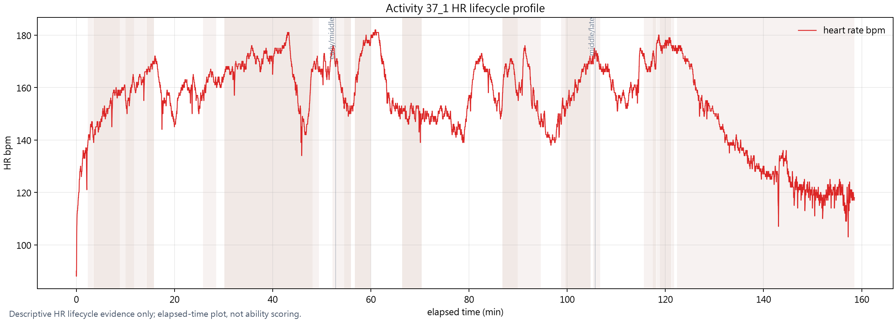
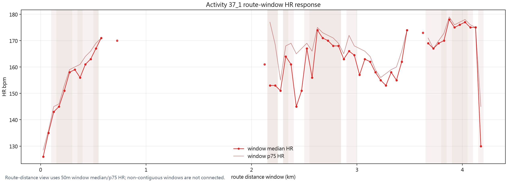
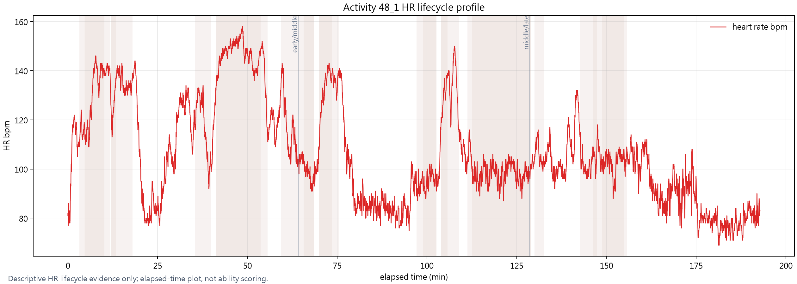
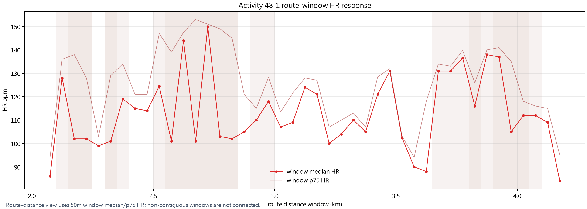
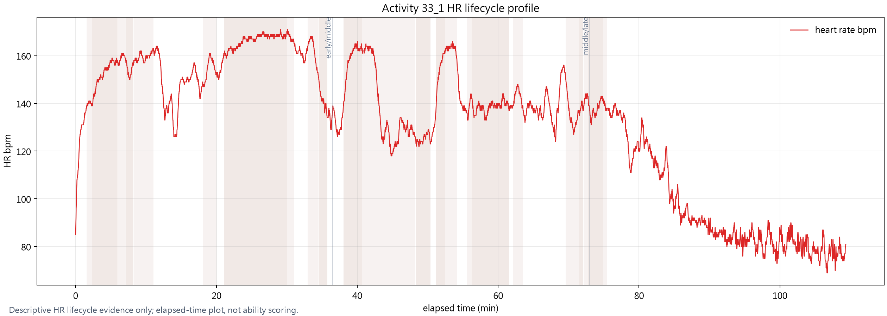
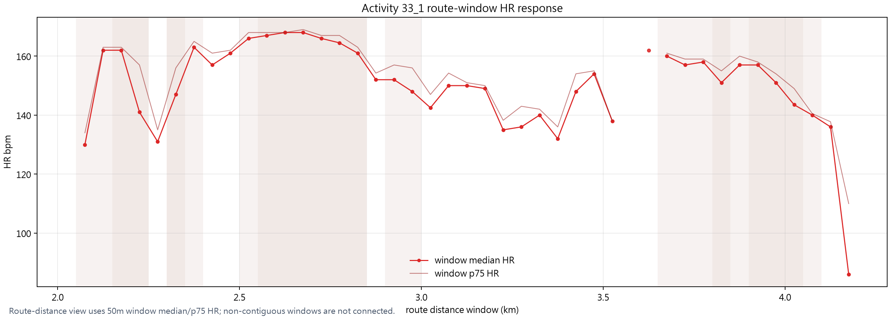
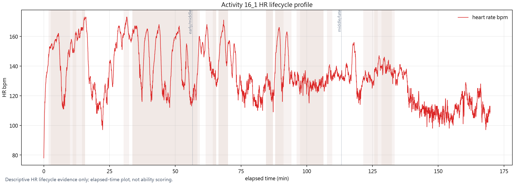
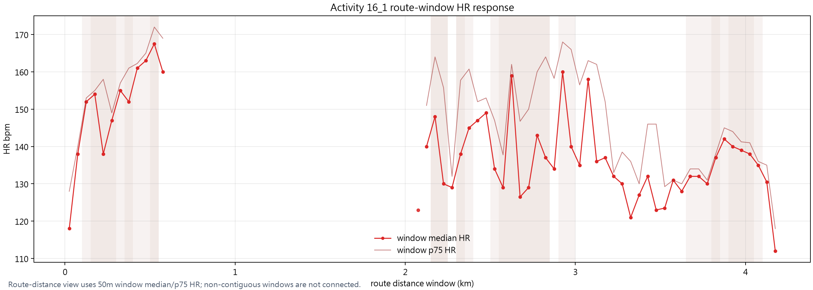
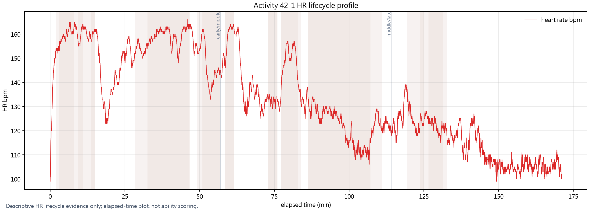
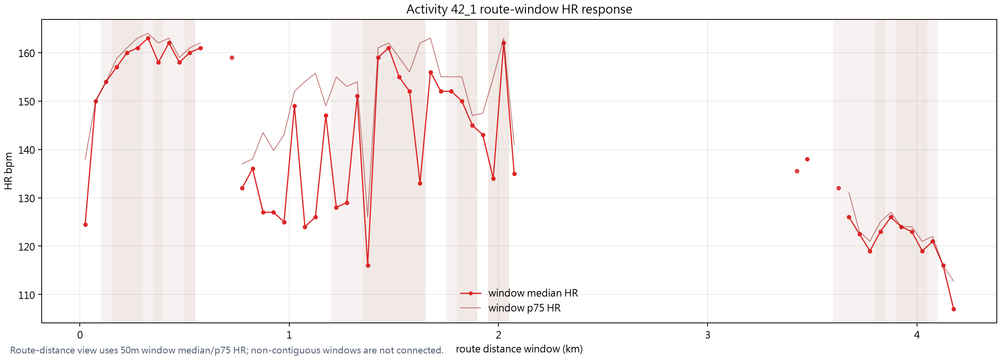

Descriptive HR lifecycle and recovery profile only. Heart-rate level, route-load response, recovery slope, fatigue drift, weather/event context, and movement behavior are descriptive evidence. This output is not a cardiopulmonary diagnosis, not ability scoring, not route suitability scoring, not THCI/radar scoring, and not a final hiking risk assessment.










| activity_id_short | duration_sec | point_count | hr_available_count | hr_coverage_ratio | hr_min_bpm | hr_max_bpm | hr_median_bpm | hr_p75_bpm | hr_p90_bpm | hr_range_bpm | speed_mps_median | high_load_hr_median | high_load_speed_mps_median | early_hr_median | middle_hr_median | late_hr_median | early_speed_median | late_speed_median | hr_drift_late_minus_early_bpm | speed_drift_late_minus_early_mps | input_time_col | input_hr_col | input_speed_col | input_route_distance_col | data_quality_flags | boundary |
|---|---|---|---|---|---|---|---|---|---|---|---|---|---|---|---|---|---|---|---|---|---|---|---|---|---|---|
| 13_1 | 8301.0 | 8302 | 8302 | 1.0 | 75.0 | 173.0 | 139.0 | 159.0 | 168.0 | 98.0 | NaN | 153.0 | NaN | 161.0 | 136.0 | 108.0 | NaN | NaN | -53.0 | NaN | elapsed_sec | heart_rate_bpm | route_dist_m | SPEED_COLUMN_MISSING | Descriptive HR lifecycle and recovery profile only. Heart-rate level, route-load response, recovery slope, fatigue drift, weather/event context, and movement behavior are descriptive evidence. This output is not a cardiopulmonary diagnosis, not ability scoring, not route suitability scoring, not THCI/radar scoring, and not a final hiking risk assessment. | |
| 14_1 | 7180.0 | 7181 | 7181 | 1.0 | 72.0 | 175.0 | 119.0 | 152.0 | 165.0 | 103.0 | NaN | 148.0 | NaN | 160.0 | 118.0 | 93.0 | NaN | NaN | -67.0 | NaN | elapsed_sec | heart_rate_bpm | route_dist_m | SPEED_COLUMN_MISSING | Descriptive HR lifecycle and recovery profile only. Heart-rate level, route-load response, recovery slope, fatigue drift, weather/event context, and movement behavior are descriptive evidence. This output is not a cardiopulmonary diagnosis, not ability scoring, not route suitability scoring, not THCI/radar scoring, and not a final hiking risk assessment. | |
| 15_1 | 6955.0 | 6956 | 6956 | 1.0 | 87.0 | 180.0 | 155.0 | 166.0 | 171.0 | 93.0 | NaN | 163.0 | NaN | 165.0 | 157.0 | 110.0 | NaN | NaN | -55.0 | NaN | elapsed_sec | heart_rate_bpm | route_dist_m | SPEED_COLUMN_MISSING | Descriptive HR lifecycle and recovery profile only. Heart-rate level, route-load response, recovery slope, fatigue drift, weather/event context, and movement behavior are descriptive evidence. This output is not a cardiopulmonary diagnosis, not ability scoring, not route suitability scoring, not THCI/radar scoring, and not a final hiking risk assessment. | |
| 16_1 | 10185.0 | 10186 | 10186 | 1.0 | 78.0 | 173.0 | 131.0 | 147.0 | 161.0 | 95.0 | NaN | 138.0 | NaN | 149.0 | 131.0 | 120.0 | NaN | NaN | -29.0 | NaN | elapsed_sec | heart_rate_bpm | route_dist_m | SPEED_COLUMN_MISSING | Descriptive HR lifecycle and recovery profile only. Heart-rate level, route-load response, recovery slope, fatigue drift, weather/event context, and movement behavior are descriptive evidence. This output is not a cardiopulmonary diagnosis, not ability scoring, not route suitability scoring, not THCI/radar scoring, and not a final hiking risk assessment. | |
| 20_1 | 8997.0 | 8998 | 8998 | 1.0 | 66.0 | 184.0 | 142.0 | 158.0 | 169.0 | 118.0 | NaN | 157.0 | NaN | 163.0 | 137.0 | 130.0 | NaN | NaN | -33.0 | NaN | elapsed_sec | heart_rate_bpm | route_dist_m | SPEED_COLUMN_MISSING | Descriptive HR lifecycle and recovery profile only. Heart-rate level, route-load response, recovery slope, fatigue drift, weather/event context, and movement behavior are descriptive evidence. This output is not a cardiopulmonary diagnosis, not ability scoring, not route suitability scoring, not THCI/radar scoring, and not a final hiking risk assessment. | |
| 23_1 | 11304.0 | 11305 | 11305 | 1.0 | 63.0 | 179.0 | 127.0 | 143.0 | 163.0 | 116.0 | NaN | 137.0 | NaN | 149.0 | 123.0 | 118.0 | NaN | NaN | -31.0 | NaN | elapsed_sec | heart_rate_bpm | route_dist_m | SPEED_COLUMN_MISSING | Descriptive HR lifecycle and recovery profile only. Heart-rate level, route-load response, recovery slope, fatigue drift, weather/event context, and movement behavior are descriptive evidence. This output is not a cardiopulmonary diagnosis, not ability scoring, not route suitability scoring, not THCI/radar scoring, and not a final hiking risk assessment. | |
| 28_1 | 8621.0 | 8622 | 8622 | 1.0 | 72.0 | 185.0 | 144.0 | 159.0 | 168.0 | 113.0 | NaN | 155.0 | NaN | 159.0 | 144.0 | 119.0 | NaN | NaN | -40.0 | NaN | elapsed_sec | heart_rate_bpm | route_dist_m | SPEED_COLUMN_MISSING | Descriptive HR lifecycle and recovery profile only. Heart-rate level, route-load response, recovery slope, fatigue drift, weather/event context, and movement behavior are descriptive evidence. This output is not a cardiopulmonary diagnosis, not ability scoring, not route suitability scoring, not THCI/radar scoring, and not a final hiking risk assessment. | |
| 29_1 | 7608.0 | 7600 | 7600 | 1.0 | 92.0 | 172.0 | 139.0 | 158.0 | 166.0 | 80.0 | NaN | 145.0 | NaN | 160.0 | 142.0 | 108.0 | NaN | NaN | -52.0 | NaN | elapsed_sec | heart_rate_bpm | route_dist_m | SPEED_COLUMN_MISSING | Descriptive HR lifecycle and recovery profile only. Heart-rate level, route-load response, recovery slope, fatigue drift, weather/event context, and movement behavior are descriptive evidence. This output is not a cardiopulmonary diagnosis, not ability scoring, not route suitability scoring, not THCI/radar scoring, and not a final hiking risk assessment. | |
| 30_1 | 7610.0 | 1873 | 1873 | 1.0 | 66.0 | 164.0 | 135.0 | 152.0 | 159.0 | 98.0 | NaN | 146.0 | NaN | 153.0 | 128.0 | 109.0 | NaN | NaN | -44.0 | NaN | elapsed_sec | heart_rate_bpm | route_dist_m | SPEED_COLUMN_MISSING | Descriptive HR lifecycle and recovery profile only. Heart-rate level, route-load response, recovery slope, fatigue drift, weather/event context, and movement behavior are descriptive evidence. This output is not a cardiopulmonary diagnosis, not ability scoring, not route suitability scoring, not THCI/radar scoring, and not a final hiking risk assessment. | |
| 33_1 | 6562.0 | 6563 | 6563 | 1.0 | 69.0 | 171.0 | 138.0 | 156.0 | 163.0 | 102.0 | NaN | 152.0 | NaN | 158.0 | 138.0 | 87.0 | NaN | NaN | -71.0 | NaN | elapsed_sec | heart_rate_bpm | route_dist_m | SPEED_COLUMN_MISSING | Descriptive HR lifecycle and recovery profile only. Heart-rate level, route-load response, recovery slope, fatigue drift, weather/event context, and movement behavior are descriptive evidence. This output is not a cardiopulmonary diagnosis, not ability scoring, not route suitability scoring, not THCI/radar scoring, and not a final hiking risk assessment. | |
| 35_1 | 7549.0 | 7550 | 7550 | 1.0 | 75.0 | 174.0 | 138.0 | 161.0 | 167.0 | 99.0 | NaN | 157.0 | NaN | 164.0 | 137.0 | 101.0 | NaN | NaN | -63.0 | NaN | elapsed_sec | heart_rate_bpm | route_dist_m | SPEED_COLUMN_MISSING | Descriptive HR lifecycle and recovery profile only. Heart-rate level, route-load response, recovery slope, fatigue drift, weather/event context, and movement behavior are descriptive evidence. This output is not a cardiopulmonary diagnosis, not ability scoring, not route suitability scoring, not THCI/radar scoring, and not a final hiking risk assessment. | |
| 36_1 | 8000.0 | 8001 | 8001 | 1.0 | 93.0 | 194.0 | 173.0 | 182.0 | 189.0 | 101.0 | NaN | 179.0 | NaN | 182.0 | 172.0 | 139.0 | NaN | NaN | -43.0 | NaN | elapsed_sec | heart_rate_bpm | route_dist_m | SPEED_COLUMN_MISSING | Descriptive HR lifecycle and recovery profile only. Heart-rate level, route-load response, recovery slope, fatigue drift, weather/event context, and movement behavior are descriptive evidence. This output is not a cardiopulmonary diagnosis, not ability scoring, not route suitability scoring, not THCI/radar scoring, and not a final hiking risk assessment. | |
| 37_1 | 9511.0 | 9512 | 9512 | 1.0 | 88.0 | 182.0 | 157.0 | 167.0 | 173.0 | 94.0 | NaN | 158.0 | NaN | 162.0 | 155.0 | 142.0 | NaN | NaN | -20.0 | NaN | elapsed_sec | heart_rate_bpm | route_dist_m | SPEED_COLUMN_MISSING | Descriptive HR lifecycle and recovery profile only. Heart-rate level, route-load response, recovery slope, fatigue drift, weather/event context, and movement behavior are descriptive evidence. This output is not a cardiopulmonary diagnosis, not ability scoring, not route suitability scoring, not THCI/radar scoring, and not a final hiking risk assessment. | |
| 38_1 | 10186.0 | 3235 | 3235 | 1.0 | 59.0 | 154.0 | 117.0 | 128.0 | 139.0 | 95.0 | NaN | 122.0 | NaN | 129.0 | 117.0 | 110.0 | NaN | NaN | -19.0 | NaN | elapsed_sec | heart_rate_bpm | route_dist_m | SPEED_COLUMN_MISSING | Descriptive HR lifecycle and recovery profile only. Heart-rate level, route-load response, recovery slope, fatigue drift, weather/event context, and movement behavior are descriptive evidence. This output is not a cardiopulmonary diagnosis, not ability scoring, not route suitability scoring, not THCI/radar scoring, and not a final hiking risk assessment. | |
| 3_1 | 7858.0 | 7859 | 7859 | 1.0 | 65.0 | 170.0 | 112.0 | 137.0 | 157.0 | 105.0 | NaN | 126.0 | NaN | 144.0 | 112.0 | 88.0 | NaN | NaN | -56.0 | NaN | elapsed_sec | heart_rate_bpm | route_dist_m | SPEED_COLUMN_MISSING | Descriptive HR lifecycle and recovery profile only. Heart-rate level, route-load response, recovery slope, fatigue drift, weather/event context, and movement behavior are descriptive evidence. This output is not a cardiopulmonary diagnosis, not ability scoring, not route suitability scoring, not THCI/radar scoring, and not a final hiking risk assessment. | |
| 40_1 | 7691.0 | 7692 | 7692 | 1.0 | 82.0 | 163.0 | 136.0 | 149.0 | 154.0 | 81.0 | NaN | 145.0 | NaN | 150.0 | 135.0 | 102.0 | NaN | NaN | -48.0 | NaN | elapsed_sec | heart_rate_bpm | route_dist_m | SPEED_COLUMN_MISSING | Descriptive HR lifecycle and recovery profile only. Heart-rate level, route-load response, recovery slope, fatigue drift, weather/event context, and movement behavior are descriptive evidence. This output is not a cardiopulmonary diagnosis, not ability scoring, not route suitability scoring, not THCI/radar scoring, and not a final hiking risk assessment. | |
| 41_1 | 7053.0 | 7054 | 7054 | 1.0 | 73.0 | 165.0 | 143.0 | 155.0 | 160.0 | 92.0 | NaN | 151.0 | NaN | 154.0 | 145.0 | 112.0 | NaN | NaN | -42.0 | NaN | elapsed_sec | heart_rate_bpm | route_dist_m | SPEED_COLUMN_MISSING | Descriptive HR lifecycle and recovery profile only. Heart-rate level, route-load response, recovery slope, fatigue drift, weather/event context, and movement behavior are descriptive evidence. This output is not a cardiopulmonary diagnosis, not ability scoring, not route suitability scoring, not THCI/radar scoring, and not a final hiking risk assessment. | |
| 42_1 | 10266.0 | 10267 | 10267 | 1.0 | 99.0 | 166.0 | 129.0 | 153.0 | 160.0 | 67.0 | NaN | 143.0 | NaN | 156.0 | 130.0 | 113.0 | NaN | NaN | -43.0 | NaN | elapsed_sec | heart_rate_bpm | route_dist_m | SPEED_COLUMN_MISSING | Descriptive HR lifecycle and recovery profile only. Heart-rate level, route-load response, recovery slope, fatigue drift, weather/event context, and movement behavior are descriptive evidence. This output is not a cardiopulmonary diagnosis, not ability scoring, not route suitability scoring, not THCI/radar scoring, and not a final hiking risk assessment. | |
| 43_1 | 11432.0 | 11433 | 11433 | 1.0 | 63.0 | 194.0 | 125.0 | 137.0 | 146.0 | 131.0 | NaN | 130.0 | NaN | 135.0 | 126.0 | 118.0 | NaN | NaN | -17.0 | NaN | elapsed_sec | heart_rate_bpm | route_dist_m | SPEED_COLUMN_MISSING | Descriptive HR lifecycle and recovery profile only. Heart-rate level, route-load response, recovery slope, fatigue drift, weather/event context, and movement behavior are descriptive evidence. This output is not a cardiopulmonary diagnosis, not ability scoring, not route suitability scoring, not THCI/radar scoring, and not a final hiking risk assessment. | |
| 44_1 | 6992.0 | 6993 | 6993 | 1.0 | 68.0 | 184.0 | 132.0 | 165.0 | 171.0 | 116.0 | NaN | 144.0 | NaN | 169.0 | 124.0 | 95.0 | NaN | NaN | -74.0 | NaN | elapsed_sec | heart_rate_bpm | route_dist_m | SPEED_COLUMN_MISSING | Descriptive HR lifecycle and recovery profile only. Heart-rate level, route-load response, recovery slope, fatigue drift, weather/event context, and movement behavior are descriptive evidence. This output is not a cardiopulmonary diagnosis, not ability scoring, not route suitability scoring, not THCI/radar scoring, and not a final hiking risk assessment. | |
| 45_1 | 7210.0 | 7211 | 7211 | 1.0 | 83.0 | 173.0 | 141.0 | 159.0 | 166.0 | 90.0 | NaN | 158.0 | NaN | 163.0 | 134.0 | 100.0 | NaN | NaN | -63.0 | NaN | elapsed_sec | heart_rate_bpm | route_dist_m | SPEED_COLUMN_MISSING | Descriptive HR lifecycle and recovery profile only. Heart-rate level, route-load response, recovery slope, fatigue drift, weather/event context, and movement behavior are descriptive evidence. This output is not a cardiopulmonary diagnosis, not ability scoring, not route suitability scoring, not THCI/radar scoring, and not a final hiking risk assessment. | |
| 46_1 | 10290.0 | 10291 | 10291 | 1.0 | 83.0 | 171.0 | 115.0 | 150.0 | 160.0 | 88.0 | NaN | 132.0 | NaN | 153.0 | 113.0 | 101.0 | NaN | NaN | -52.0 | NaN | elapsed_sec | heart_rate_bpm | route_dist_m | SPEED_COLUMN_MISSING | Descriptive HR lifecycle and recovery profile only. Heart-rate level, route-load response, recovery slope, fatigue drift, weather/event context, and movement behavior are descriptive evidence. This output is not a cardiopulmonary diagnosis, not ability scoring, not route suitability scoring, not THCI/radar scoring, and not a final hiking risk assessment. | |
| 48_1 | 11567.0 | 11568 | 11568 | 1.0 | 69.0 | 158.0 | 102.0 | 121.0 | 139.0 | 89.0 | NaN | 112.0 | NaN | 126.0 | 98.0 | 97.0 | NaN | NaN | -29.0 | NaN | elapsed_sec | heart_rate_bpm | route_dist_m | SPEED_COLUMN_MISSING | Descriptive HR lifecycle and recovery profile only. Heart-rate level, route-load response, recovery slope, fatigue drift, weather/event context, and movement behavior are descriptive evidence. This output is not a cardiopulmonary diagnosis, not ability scoring, not route suitability scoring, not THCI/radar scoring, and not a final hiking risk assessment. | |
| 6_1 | 11950.0 | 11951 | 11951 | 1.0 | 62.0 | 162.0 | 93.0 | 119.0 | 150.0 | 100.0 | NaN | NaN | NaN | 139.0 | 95.0 | 74.0 | NaN | NaN | -65.0 | NaN | elapsed_sec | heart_rate_bpm | route_dist_m | SPEED_COLUMN_MISSING | Descriptive HR lifecycle and recovery profile only. Heart-rate level, route-load response, recovery slope, fatigue drift, weather/event context, and movement behavior are descriptive evidence. This output is not a cardiopulmonary diagnosis, not ability scoring, not route suitability scoring, not THCI/radar scoring, and not a final hiking risk assessment. | |
| 8_1 | 8413.0 | 8413 | 8413 | 1.0 | 92.0 | 180.0 | 155.0 | 170.0 | 175.0 | 88.0 | NaN | 167.0 | NaN | 171.0 | 150.0 | 127.0 | NaN | NaN | -44.0 | NaN | elapsed_sec | heart_rate_bpm | route_dist_m | SPEED_COLUMN_MISSING | Descriptive HR lifecycle and recovery profile only. Heart-rate level, route-load response, recovery slope, fatigue drift, weather/event context, and movement behavior are descriptive evidence. This output is not a cardiopulmonary diagnosis, not ability scoring, not route suitability scoring, not THCI/radar scoring, and not a final hiking risk assessment. | |
| 9_1 | 8642.0 | 8643 | 8643 | 1.0 | 76.0 | 182.0 | 140.0 | 162.0 | 172.0 | 106.0 | NaN | 148.0 | NaN | 166.0 | 142.0 | 105.0 | NaN | NaN | -61.0 | NaN | elapsed_sec | heart_rate_bpm | route_dist_m | SPEED_COLUMN_MISSING | Descriptive HR lifecycle and recovery profile only. Heart-rate level, route-load response, recovery slope, fatigue drift, weather/event context, and movement behavior are descriptive evidence. This output is not a cardiopulmonary diagnosis, not ability scoring, not route suitability scoring, not THCI/radar scoring, and not a final hiking risk assessment. |
| activity_id_short | extreme_type | heart_rate_bpm | elapsed_sec | route_distance_m | speed_mps | elevation_m | route_load_context_band | planning_caution_level | boundary |
|---|---|---|---|---|---|---|---|---|---|
| 37_1 | hr_min | 88.0 | 1.0 | 0.0 | NaN | NaN | LOWER_ROUTE_LOAD_CONTEXT | REVIEW_FOR_CONSERVATIVE_PLANNING | Descriptive HR lifecycle and recovery profile only. Heart-rate level, route-load response, recovery slope, fatigue drift, weather/event context, and movement behavior are descriptive evidence. This output is not a cardiopulmonary diagnosis, not ability scoring, not route suitability scoring, not THCI/radar scoring, and not a final hiking risk assessment. |
| 37_1 | hr_max | 182.0 | 3652.0 | 2118.0 | NaN | NaN | MODERATE_ROUTE_LOAD_CONTEXT | REVIEW_FOR_CONSERVATIVE_PLANNING | Descriptive HR lifecycle and recovery profile only. Heart-rate level, route-load response, recovery slope, fatigue drift, weather/event context, and movement behavior are descriptive evidence. This output is not a cardiopulmonary diagnosis, not ability scoring, not route suitability scoring, not THCI/radar scoring, and not a final hiking risk assessment. |
| 13_1 | hr_min | 75.0 | 8101.0 | 4165.0 | NaN | NaN | MODERATE_ROUTE_LOAD_CONTEXT | REVIEW_FOR_CONSERVATIVE_PLANNING | Descriptive HR lifecycle and recovery profile only. Heart-rate level, route-load response, recovery slope, fatigue drift, weather/event context, and movement behavior are descriptive evidence. This output is not a cardiopulmonary diagnosis, not ability scoring, not route suitability scoring, not THCI/radar scoring, and not a final hiking risk assessment. |
| 13_1 | hr_max | 173.0 | 2012.0 | 2688.0 | NaN | NaN | VERY_HIGH_ROUTE_LOAD_CONTEXT | TURNAROUND_CONDITION_REVIEW_RECOMMENDED | Descriptive HR lifecycle and recovery profile only. Heart-rate level, route-load response, recovery slope, fatigue drift, weather/event context, and movement behavior are descriptive evidence. This output is not a cardiopulmonary diagnosis, not ability scoring, not route suitability scoring, not THCI/radar scoring, and not a final hiking risk assessment. |
| 14_1 | hr_min | 72.0 | 7034.0 | 4165.0 | NaN | NaN | MODERATE_ROUTE_LOAD_CONTEXT | REVIEW_FOR_CONSERVATIVE_PLANNING | Descriptive HR lifecycle and recovery profile only. Heart-rate level, route-load response, recovery slope, fatigue drift, weather/event context, and movement behavior are descriptive evidence. This output is not a cardiopulmonary diagnosis, not ability scoring, not route suitability scoring, not THCI/radar scoring, and not a final hiking risk assessment. |
| 14_1 | hr_max | 175.0 | 1761.0 | 2557.0 | NaN | NaN | VERY_HIGH_ROUTE_LOAD_CONTEXT | TURNAROUND_CONDITION_REVIEW_RECOMMENDED | Descriptive HR lifecycle and recovery profile only. Heart-rate level, route-load response, recovery slope, fatigue drift, weather/event context, and movement behavior are descriptive evidence. This output is not a cardiopulmonary diagnosis, not ability scoring, not route suitability scoring, not THCI/radar scoring, and not a final hiking risk assessment. |
| 15_1 | hr_min | 87.0 | 6898.0 | 4163.0 | NaN | NaN | MODERATE_ROUTE_LOAD_CONTEXT | REVIEW_FOR_CONSERVATIVE_PLANNING | Descriptive HR lifecycle and recovery profile only. Heart-rate level, route-load response, recovery slope, fatigue drift, weather/event context, and movement behavior are descriptive evidence. This output is not a cardiopulmonary diagnosis, not ability scoring, not route suitability scoring, not THCI/radar scoring, and not a final hiking risk assessment. |
| 15_1 | hr_max | 180.0 | 3236.0 | 2356.0 | NaN | NaN | HIGH_ROUTE_LOAD_CONTEXT | CONSERVATIVE_PLANNING_RECOMMENDED | Descriptive HR lifecycle and recovery profile only. Heart-rate level, route-load response, recovery slope, fatigue drift, weather/event context, and movement behavior are descriptive evidence. This output is not a cardiopulmonary diagnosis, not ability scoring, not route suitability scoring, not THCI/radar scoring, and not a final hiking risk assessment. |
| 16_1 | hr_min | 78.0 | 0.0 | 0.0 | NaN | NaN | LOWER_ROUTE_LOAD_CONTEXT | REVIEW_FOR_CONSERVATIVE_PLANNING | Descriptive HR lifecycle and recovery profile only. Heart-rate level, route-load response, recovery slope, fatigue drift, weather/event context, and movement behavior are descriptive evidence. This output is not a cardiopulmonary diagnosis, not ability scoring, not route suitability scoring, not THCI/radar scoring, and not a final hiking risk assessment. |
| 16_1 | hr_max | 173.0 | 925.0 | 540.0 | NaN | NaN | VERY_HIGH_ROUTE_LOAD_CONTEXT | TURNAROUND_CONDITION_REVIEW_RECOMMENDED | Descriptive HR lifecycle and recovery profile only. Heart-rate level, route-load response, recovery slope, fatigue drift, weather/event context, and movement behavior are descriptive evidence. This output is not a cardiopulmonary diagnosis, not ability scoring, not route suitability scoring, not THCI/radar scoring, and not a final hiking risk assessment. |
| 20_1 | hr_min | 66.0 | 8739.0 | 4161.0 | NaN | NaN | MODERATE_ROUTE_LOAD_CONTEXT | REVIEW_FOR_CONSERVATIVE_PLANNING | Descriptive HR lifecycle and recovery profile only. Heart-rate level, route-load response, recovery slope, fatigue drift, weather/event context, and movement behavior are descriptive evidence. This output is not a cardiopulmonary diagnosis, not ability scoring, not route suitability scoring, not THCI/radar scoring, and not a final hiking risk assessment. |
| 20_1 | hr_max | 184.0 | 2198.0 | 2671.0 | NaN | NaN | VERY_HIGH_ROUTE_LOAD_CONTEXT | TURNAROUND_CONDITION_REVIEW_RECOMMENDED | Descriptive HR lifecycle and recovery profile only. Heart-rate level, route-load response, recovery slope, fatigue drift, weather/event context, and movement behavior are descriptive evidence. This output is not a cardiopulmonary diagnosis, not ability scoring, not route suitability scoring, not THCI/radar scoring, and not a final hiking risk assessment. |
| 23_1 | hr_min | 63.0 | 0.0 | 0.0 | NaN | NaN | LOWER_ROUTE_LOAD_CONTEXT | REVIEW_FOR_CONSERVATIVE_PLANNING | Descriptive HR lifecycle and recovery profile only. Heart-rate level, route-load response, recovery slope, fatigue drift, weather/event context, and movement behavior are descriptive evidence. This output is not a cardiopulmonary diagnosis, not ability scoring, not route suitability scoring, not THCI/radar scoring, and not a final hiking risk assessment. |
| 23_1 | hr_max | 179.0 | 2652.0 | 2581.0 | NaN | NaN | VERY_HIGH_ROUTE_LOAD_CONTEXT | TURNAROUND_CONDITION_REVIEW_RECOMMENDED | Descriptive HR lifecycle and recovery profile only. Heart-rate level, route-load response, recovery slope, fatigue drift, weather/event context, and movement behavior are descriptive evidence. This output is not a cardiopulmonary diagnosis, not ability scoring, not route suitability scoring, not THCI/radar scoring, and not a final hiking risk assessment. |
| 28_1 | hr_min | 72.0 | 4.0 | 4186.0 | NaN | NaN | MODERATE_ROUTE_LOAD_CONTEXT | REVIEW_FOR_CONSERVATIVE_PLANNING | Descriptive HR lifecycle and recovery profile only. Heart-rate level, route-load response, recovery slope, fatigue drift, weather/event context, and movement behavior are descriptive evidence. This output is not a cardiopulmonary diagnosis, not ability scoring, not route suitability scoring, not THCI/radar scoring, and not a final hiking risk assessment. |
| 28_1 | hr_max | 185.0 | 4271.0 | 2370.0 | NaN | NaN | HIGH_ROUTE_LOAD_CONTEXT | CONSERVATIVE_PLANNING_RECOMMENDED | Descriptive HR lifecycle and recovery profile only. Heart-rate level, route-load response, recovery slope, fatigue drift, weather/event context, and movement behavior are descriptive evidence. This output is not a cardiopulmonary diagnosis, not ability scoring, not route suitability scoring, not THCI/radar scoring, and not a final hiking risk assessment. |
| 29_1 | hr_min | 92.0 | 7252.0 | 4165.0 | NaN | NaN | MODERATE_ROUTE_LOAD_CONTEXT | REVIEW_FOR_CONSERVATIVE_PLANNING | Descriptive HR lifecycle and recovery profile only. Heart-rate level, route-load response, recovery slope, fatigue drift, weather/event context, and movement behavior are descriptive evidence. This output is not a cardiopulmonary diagnosis, not ability scoring, not route suitability scoring, not THCI/radar scoring, and not a final hiking risk assessment. |
| 29_1 | hr_max | 172.0 | 1682.0 | 2572.0 | NaN | NaN | VERY_HIGH_ROUTE_LOAD_CONTEXT | TURNAROUND_CONDITION_REVIEW_RECOMMENDED | Descriptive HR lifecycle and recovery profile only. Heart-rate level, route-load response, recovery slope, fatigue drift, weather/event context, and movement behavior are descriptive evidence. This output is not a cardiopulmonary diagnosis, not ability scoring, not route suitability scoring, not THCI/radar scoring, and not a final hiking risk assessment. |
| 30_1 | hr_min | 66.0 | 0.0 | 4178.0 | NaN | NaN | MODERATE_ROUTE_LOAD_CONTEXT | REVIEW_FOR_CONSERVATIVE_PLANNING | Descriptive HR lifecycle and recovery profile only. Heart-rate level, route-load response, recovery slope, fatigue drift, weather/event context, and movement behavior are descriptive evidence. This output is not a cardiopulmonary diagnosis, not ability scoring, not route suitability scoring, not THCI/radar scoring, and not a final hiking risk assessment. |
| 30_1 | hr_max | 164.0 | 2075.0 | 2577.0 | NaN | NaN | VERY_HIGH_ROUTE_LOAD_CONTEXT | TURNAROUND_CONDITION_REVIEW_RECOMMENDED | Descriptive HR lifecycle and recovery profile only. Heart-rate level, route-load response, recovery slope, fatigue drift, weather/event context, and movement behavior are descriptive evidence. This output is not a cardiopulmonary diagnosis, not ability scoring, not route suitability scoring, not THCI/radar scoring, and not a final hiking risk assessment. |
| 33_1 | hr_min | 69.0 | 6401.0 | 4165.0 | NaN | NaN | MODERATE_ROUTE_LOAD_CONTEXT | REVIEW_FOR_CONSERVATIVE_PLANNING | Descriptive HR lifecycle and recovery profile only. Heart-rate level, route-load response, recovery slope, fatigue drift, weather/event context, and movement behavior are descriptive evidence. This output is not a cardiopulmonary diagnosis, not ability scoring, not route suitability scoring, not THCI/radar scoring, and not a final hiking risk assessment. |
| 33_1 | hr_max | 171.0 | 1746.0 | 2587.0 | NaN | NaN | VERY_HIGH_ROUTE_LOAD_CONTEXT | TURNAROUND_CONDITION_REVIEW_RECOMMENDED | Descriptive HR lifecycle and recovery profile only. Heart-rate level, route-load response, recovery slope, fatigue drift, weather/event context, and movement behavior are descriptive evidence. This output is not a cardiopulmonary diagnosis, not ability scoring, not route suitability scoring, not THCI/radar scoring, and not a final hiking risk assessment. |
| 35_1 | hr_min | 75.0 | 7492.0 | 4164.0 | NaN | NaN | MODERATE_ROUTE_LOAD_CONTEXT | REVIEW_FOR_CONSERVATIVE_PLANNING | Descriptive HR lifecycle and recovery profile only. Heart-rate level, route-load response, recovery slope, fatigue drift, weather/event context, and movement behavior are descriptive evidence. This output is not a cardiopulmonary diagnosis, not ability scoring, not route suitability scoring, not THCI/radar scoring, and not a final hiking risk assessment. |
| 35_1 | hr_max | 174.0 | 1623.0 | 2732.0 | NaN | NaN | VERY_HIGH_ROUTE_LOAD_CONTEXT | TURNAROUND_CONDITION_REVIEW_RECOMMENDED | Descriptive HR lifecycle and recovery profile only. Heart-rate level, route-load response, recovery slope, fatigue drift, weather/event context, and movement behavior are descriptive evidence. This output is not a cardiopulmonary diagnosis, not ability scoring, not route suitability scoring, not THCI/radar scoring, and not a final hiking risk assessment. |
| 36_1 | hr_min | 93.0 | 0.0 | 4183.0 | NaN | NaN | MODERATE_ROUTE_LOAD_CONTEXT | REVIEW_FOR_CONSERVATIVE_PLANNING | Descriptive HR lifecycle and recovery profile only. Heart-rate level, route-load response, recovery slope, fatigue drift, weather/event context, and movement behavior are descriptive evidence. This output is not a cardiopulmonary diagnosis, not ability scoring, not route suitability scoring, not THCI/radar scoring, and not a final hiking risk assessment. |
| 36_1 | hr_max | 194.0 | 2277.0 | 2569.0 | NaN | NaN | VERY_HIGH_ROUTE_LOAD_CONTEXT | TURNAROUND_CONDITION_REVIEW_RECOMMENDED | Descriptive HR lifecycle and recovery profile only. Heart-rate level, route-load response, recovery slope, fatigue drift, weather/event context, and movement behavior are descriptive evidence. This output is not a cardiopulmonary diagnosis, not ability scoring, not route suitability scoring, not THCI/radar scoring, and not a final hiking risk assessment. |
| 38_1 | hr_min | 59.0 | 7769.0 | 3867.0 | NaN | NaN | HIGH_ROUTE_LOAD_CONTEXT | CONSERVATIVE_PLANNING_RECOMMENDED | Descriptive HR lifecycle and recovery profile only. Heart-rate level, route-load response, recovery slope, fatigue drift, weather/event context, and movement behavior are descriptive evidence. This output is not a cardiopulmonary diagnosis, not ability scoring, not route suitability scoring, not THCI/radar scoring, and not a final hiking risk assessment. |
| 38_1 | hr_max | 154.0 | 3616.0 | 2402.0 | NaN | NaN | MODERATE_ROUTE_LOAD_CONTEXT | REVIEW_FOR_CONSERVATIVE_PLANNING | Descriptive HR lifecycle and recovery profile only. Heart-rate level, route-load response, recovery slope, fatigue drift, weather/event context, and movement behavior are descriptive evidence. This output is not a cardiopulmonary diagnosis, not ability scoring, not route suitability scoring, not THCI/radar scoring, and not a final hiking risk assessment. |
| 3_1 | hr_min | 65.0 | 7746.0 | 4165.0 | NaN | NaN | MODERATE_ROUTE_LOAD_CONTEXT | REVIEW_FOR_CONSERVATIVE_PLANNING | Descriptive HR lifecycle and recovery profile only. Heart-rate level, route-load response, recovery slope, fatigue drift, weather/event context, and movement behavior are descriptive evidence. This output is not a cardiopulmonary diagnosis, not ability scoring, not route suitability scoring, not THCI/radar scoring, and not a final hiking risk assessment. |
| 3_1 | hr_max | 170.0 | 1613.0 | 2736.0 | NaN | NaN | VERY_HIGH_ROUTE_LOAD_CONTEXT | TURNAROUND_CONDITION_REVIEW_RECOMMENDED | Descriptive HR lifecycle and recovery profile only. Heart-rate level, route-load response, recovery slope, fatigue drift, weather/event context, and movement behavior are descriptive evidence. This output is not a cardiopulmonary diagnosis, not ability scoring, not route suitability scoring, not THCI/radar scoring, and not a final hiking risk assessment. |
| 40_1 | hr_min | 82.0 | 7371.0 | 4164.0 | NaN | NaN | MODERATE_ROUTE_LOAD_CONTEXT | REVIEW_FOR_CONSERVATIVE_PLANNING | Descriptive HR lifecycle and recovery profile only. Heart-rate level, route-load response, recovery slope, fatigue drift, weather/event context, and movement behavior are descriptive evidence. This output is not a cardiopulmonary diagnosis, not ability scoring, not route suitability scoring, not THCI/radar scoring, and not a final hiking risk assessment. |
| 40_1 | hr_max | 163.0 | 2185.0 | 2584.0 | NaN | NaN | VERY_HIGH_ROUTE_LOAD_CONTEXT | TURNAROUND_CONDITION_REVIEW_RECOMMENDED | Descriptive HR lifecycle and recovery profile only. Heart-rate level, route-load response, recovery slope, fatigue drift, weather/event context, and movement behavior are descriptive evidence. This output is not a cardiopulmonary diagnosis, not ability scoring, not route suitability scoring, not THCI/radar scoring, and not a final hiking risk assessment. |
| 41_1 | hr_min | 73.0 | 4.0 | 2.0 | NaN | NaN | LOWER_ROUTE_LOAD_CONTEXT | REVIEW_FOR_CONSERVATIVE_PLANNING | Descriptive HR lifecycle and recovery profile only. Heart-rate level, route-load response, recovery slope, fatigue drift, weather/event context, and movement behavior are descriptive evidence. This output is not a cardiopulmonary diagnosis, not ability scoring, not route suitability scoring, not THCI/radar scoring, and not a final hiking risk assessment. |
| 41_1 | hr_max | 165.0 | 1035.0 | 3106.0 | NaN | NaN | MODERATE_ROUTE_LOAD_CONTEXT | ROUTINE_PLANNING_CONTEXT | Descriptive HR lifecycle and recovery profile only. Heart-rate level, route-load response, recovery slope, fatigue drift, weather/event context, and movement behavior are descriptive evidence. This output is not a cardiopulmonary diagnosis, not ability scoring, not route suitability scoring, not THCI/radar scoring, and not a final hiking risk assessment. |
| 42_1 | hr_min | 99.0 | 0.0 | 0.0 | NaN | NaN | LOWER_ROUTE_LOAD_CONTEXT | REVIEW_FOR_CONSERVATIVE_PLANNING | Descriptive HR lifecycle and recovery profile only. Heart-rate level, route-load response, recovery slope, fatigue drift, weather/event context, and movement behavior are descriptive evidence. This output is not a cardiopulmonary diagnosis, not ability scoring, not route suitability scoring, not THCI/radar scoring, and not a final hiking risk assessment. |
| 42_1 | hr_max | 166.0 | 2761.0 | 1628.0 | NaN | NaN | VERY_HIGH_ROUTE_LOAD_CONTEXT | TURNAROUND_CONDITION_REVIEW_RECOMMENDED | Descriptive HR lifecycle and recovery profile only. Heart-rate level, route-load response, recovery slope, fatigue drift, weather/event context, and movement behavior are descriptive evidence. This output is not a cardiopulmonary diagnosis, not ability scoring, not route suitability scoring, not THCI/radar scoring, and not a final hiking risk assessment. |
| 43_1 | hr_min | 63.0 | 6.0 | 4185.0 | NaN | NaN | MODERATE_ROUTE_LOAD_CONTEXT | REVIEW_FOR_CONSERVATIVE_PLANNING | Descriptive HR lifecycle and recovery profile only. Heart-rate level, route-load response, recovery slope, fatigue drift, weather/event context, and movement behavior are descriptive evidence. This output is not a cardiopulmonary diagnosis, not ability scoring, not route suitability scoring, not THCI/radar scoring, and not a final hiking risk assessment. |
| 43_1 | hr_max | 194.0 | 11354.0 | 4166.0 | NaN | NaN | MODERATE_ROUTE_LOAD_CONTEXT | REVIEW_FOR_CONSERVATIVE_PLANNING | Descriptive HR lifecycle and recovery profile only. Heart-rate level, route-load response, recovery slope, fatigue drift, weather/event context, and movement behavior are descriptive evidence. This output is not a cardiopulmonary diagnosis, not ability scoring, not route suitability scoring, not THCI/radar scoring, and not a final hiking risk assessment. |
| 44_1 | hr_min | 68.0 | 0.0 | 0.0 | NaN | NaN | LOWER_ROUTE_LOAD_CONTEXT | REVIEW_FOR_CONSERVATIVE_PLANNING | Descriptive HR lifecycle and recovery profile only. Heart-rate level, route-load response, recovery slope, fatigue drift, weather/event context, and movement behavior are descriptive evidence. This output is not a cardiopulmonary diagnosis, not ability scoring, not route suitability scoring, not THCI/radar scoring, and not a final hiking risk assessment. |
| 44_1 | hr_max | 184.0 | 2005.0 | 2098.0 | NaN | NaN | MODERATE_ROUTE_LOAD_CONTEXT | REVIEW_FOR_CONSERVATIVE_PLANNING | Descriptive HR lifecycle and recovery profile only. Heart-rate level, route-load response, recovery slope, fatigue drift, weather/event context, and movement behavior are descriptive evidence. This output is not a cardiopulmonary diagnosis, not ability scoring, not route suitability scoring, not THCI/radar scoring, and not a final hiking risk assessment. |
| 45_1 | hr_min | 83.0 | 6759.0 | 4163.0 | NaN | NaN | MODERATE_ROUTE_LOAD_CONTEXT | REVIEW_FOR_CONSERVATIVE_PLANNING | Descriptive HR lifecycle and recovery profile only. Heart-rate level, route-load response, recovery slope, fatigue drift, weather/event context, and movement behavior are descriptive evidence. This output is not a cardiopulmonary diagnosis, not ability scoring, not route suitability scoring, not THCI/radar scoring, and not a final hiking risk assessment. |
| 45_1 | hr_max | 173.0 | 1838.0 | 2557.0 | NaN | NaN | VERY_HIGH_ROUTE_LOAD_CONTEXT | TURNAROUND_CONDITION_REVIEW_RECOMMENDED | Descriptive HR lifecycle and recovery profile only. Heart-rate level, route-load response, recovery slope, fatigue drift, weather/event context, and movement behavior are descriptive evidence. This output is not a cardiopulmonary diagnosis, not ability scoring, not route suitability scoring, not THCI/radar scoring, and not a final hiking risk assessment. |
| 46_1 | hr_min | 83.0 | 9057.0 | 4165.0 | NaN | NaN | MODERATE_ROUTE_LOAD_CONTEXT | REVIEW_FOR_CONSERVATIVE_PLANNING | Descriptive HR lifecycle and recovery profile only. Heart-rate level, route-load response, recovery slope, fatigue drift, weather/event context, and movement behavior are descriptive evidence. This output is not a cardiopulmonary diagnosis, not ability scoring, not route suitability scoring, not THCI/radar scoring, and not a final hiking risk assessment. |
| 46_1 | hr_max | 171.0 | 3042.0 | 2391.0 | NaN | NaN | VERY_HIGH_ROUTE_LOAD_CONTEXT | TURNAROUND_CONDITION_REVIEW_RECOMMENDED | Descriptive HR lifecycle and recovery profile only. Heart-rate level, route-load response, recovery slope, fatigue drift, weather/event context, and movement behavior are descriptive evidence. This output is not a cardiopulmonary diagnosis, not ability scoring, not route suitability scoring, not THCI/radar scoring, and not a final hiking risk assessment. |
| 48_1 | hr_min | 69.0 | 10874.0 | 4164.0 | NaN | NaN | MODERATE_ROUTE_LOAD_CONTEXT | REVIEW_FOR_CONSERVATIVE_PLANNING | Descriptive HR lifecycle and recovery profile only. Heart-rate level, route-load response, recovery slope, fatigue drift, weather/event context, and movement behavior are descriptive evidence. This output is not a cardiopulmonary diagnosis, not ability scoring, not route suitability scoring, not THCI/radar scoring, and not a final hiking risk assessment. |
| 48_1 | hr_max | 158.0 | 2915.0 | 2677.0 | NaN | NaN | VERY_HIGH_ROUTE_LOAD_CONTEXT | TURNAROUND_CONDITION_REVIEW_RECOMMENDED | Descriptive HR lifecycle and recovery profile only. Heart-rate level, route-load response, recovery slope, fatigue drift, weather/event context, and movement behavior are descriptive evidence. This output is not a cardiopulmonary diagnosis, not ability scoring, not route suitability scoring, not THCI/radar scoring, and not a final hiking risk assessment. |
| 6_1 | hr_min | 62.0 | 11104.0 | 4164.0 | NaN | NaN | NaN | NaN | Descriptive HR lifecycle and recovery profile only. Heart-rate level, route-load response, recovery slope, fatigue drift, weather/event context, and movement behavior are descriptive evidence. This output is not a cardiopulmonary diagnosis, not ability scoring, not route suitability scoring, not THCI/radar scoring, and not a final hiking risk assessment. |
| 6_1 | hr_max | 162.0 | 1596.0 | 2729.0 | NaN | NaN | NaN | NaN | Descriptive HR lifecycle and recovery profile only. Heart-rate level, route-load response, recovery slope, fatigue drift, weather/event context, and movement behavior are descriptive evidence. This output is not a cardiopulmonary diagnosis, not ability scoring, not route suitability scoring, not THCI/radar scoring, and not a final hiking risk assessment. |
| 8_1 | hr_min | 92.0 | 0.0 | 0.0 | NaN | NaN | LOWER_ROUTE_LOAD_CONTEXT | REVIEW_FOR_CONSERVATIVE_PLANNING | Descriptive HR lifecycle and recovery profile only. Heart-rate level, route-load response, recovery slope, fatigue drift, weather/event context, and movement behavior are descriptive evidence. This output is not a cardiopulmonary diagnosis, not ability scoring, not route suitability scoring, not THCI/radar scoring, and not a final hiking risk assessment. |
| 8_1 | hr_max | 180.0 | 2384.0 | 2584.0 | NaN | NaN | VERY_HIGH_ROUTE_LOAD_CONTEXT | TURNAROUND_CONDITION_REVIEW_RECOMMENDED | Descriptive HR lifecycle and recovery profile only. Heart-rate level, route-load response, recovery slope, fatigue drift, weather/event context, and movement behavior are descriptive evidence. This output is not a cardiopulmonary diagnosis, not ability scoring, not route suitability scoring, not THCI/radar scoring, and not a final hiking risk assessment. |
| 9_1 | hr_min | 76.0 | 8513.0 | 4166.0 | NaN | NaN | MODERATE_ROUTE_LOAD_CONTEXT | REVIEW_FOR_CONSERVATIVE_PLANNING | Descriptive HR lifecycle and recovery profile only. Heart-rate level, route-load response, recovery slope, fatigue drift, weather/event context, and movement behavior are descriptive evidence. This output is not a cardiopulmonary diagnosis, not ability scoring, not route suitability scoring, not THCI/radar scoring, and not a final hiking risk assessment. |
| 9_1 | hr_max | 182.0 | 3831.0 | 2375.0 | NaN | NaN | HIGH_ROUTE_LOAD_CONTEXT | CONSERVATIVE_PLANNING_RECOMMENDED | Descriptive HR lifecycle and recovery profile only. Heart-rate level, route-load response, recovery slope, fatigue drift, weather/event context, and movement behavior are descriptive evidence. This output is not a cardiopulmonary diagnosis, not ability scoring, not route suitability scoring, not THCI/radar scoring, and not a final hiking risk assessment. |
| activity_id_short | route_load_context_band | window_point_count | hr_median_bpm | hr_p75_bpm | speed_mps_median | speed_per_hr_mps_per_bpm | boundary |
|---|---|---|---|---|---|---|---|
| 37_1 | HIGH_ROUTE_LOAD_CONTEXT | 3446 | 146.0 | 163.00 | NaN | NaN | Descriptive HR lifecycle and recovery profile only. Heart-rate level, route-load response, recovery slope, fatigue drift, weather/event context, and movement behavior are descriptive evidence. This output is not a cardiopulmonary diagnosis, not ability scoring, not route suitability scoring, not THCI/radar scoring, and not a final hiking risk assessment. |
| 37_1 | LOWER_ROUTE_LOAD_CONTEXT | 1632 | 157.0 | 165.00 | NaN | NaN | Descriptive HR lifecycle and recovery profile only. Heart-rate level, route-load response, recovery slope, fatigue drift, weather/event context, and movement behavior are descriptive evidence. This output is not a cardiopulmonary diagnosis, not ability scoring, not route suitability scoring, not THCI/radar scoring, and not a final hiking risk assessment. |
| 37_1 | MODERATE_ROUTE_LOAD_CONTEXT | 1636 | 155.0 | 164.00 | NaN | NaN | Descriptive HR lifecycle and recovery profile only. Heart-rate level, route-load response, recovery slope, fatigue drift, weather/event context, and movement behavior are descriptive evidence. This output is not a cardiopulmonary diagnosis, not ability scoring, not route suitability scoring, not THCI/radar scoring, and not a final hiking risk assessment. |
| 37_1 | VERY_HIGH_ROUTE_LOAD_CONTEXT | 2798 | 166.0 | 171.00 | NaN | NaN | Descriptive HR lifecycle and recovery profile only. Heart-rate level, route-load response, recovery slope, fatigue drift, weather/event context, and movement behavior are descriptive evidence. This output is not a cardiopulmonary diagnosis, not ability scoring, not route suitability scoring, not THCI/radar scoring, and not a final hiking risk assessment. |
| 13_1 | HIGH_ROUTE_LOAD_CONTEXT | 1609 | 153.0 | 163.00 | NaN | NaN | Descriptive HR lifecycle and recovery profile only. Heart-rate level, route-load response, recovery slope, fatigue drift, weather/event context, and movement behavior are descriptive evidence. This output is not a cardiopulmonary diagnosis, not ability scoring, not route suitability scoring, not THCI/radar scoring, and not a final hiking risk assessment. |
| 13_1 | LOWER_ROUTE_LOAD_CONTEXT | 724 | 140.0 | 149.00 | NaN | NaN | Descriptive HR lifecycle and recovery profile only. Heart-rate level, route-load response, recovery slope, fatigue drift, weather/event context, and movement behavior are descriptive evidence. This output is not a cardiopulmonary diagnosis, not ability scoring, not route suitability scoring, not THCI/radar scoring, and not a final hiking risk assessment. |
| 13_1 | MODERATE_ROUTE_LOAD_CONTEXT | 3466 | 119.0 | 135.00 | NaN | NaN | Descriptive HR lifecycle and recovery profile only. Heart-rate level, route-load response, recovery slope, fatigue drift, weather/event context, and movement behavior are descriptive evidence. This output is not a cardiopulmonary diagnosis, not ability scoring, not route suitability scoring, not THCI/radar scoring, and not a final hiking risk assessment. |
| 13_1 | VERY_HIGH_ROUTE_LOAD_CONTEXT | 2503 | 153.0 | 168.00 | NaN | NaN | Descriptive HR lifecycle and recovery profile only. Heart-rate level, route-load response, recovery slope, fatigue drift, weather/event context, and movement behavior are descriptive evidence. This output is not a cardiopulmonary diagnosis, not ability scoring, not route suitability scoring, not THCI/radar scoring, and not a final hiking risk assessment. |
| 14_1 | HIGH_ROUTE_LOAD_CONTEXT | 1150 | 151.0 | 163.00 | NaN | NaN | Descriptive HR lifecycle and recovery profile only. Heart-rate level, route-load response, recovery slope, fatigue drift, weather/event context, and movement behavior are descriptive evidence. This output is not a cardiopulmonary diagnosis, not ability scoring, not route suitability scoring, not THCI/radar scoring, and not a final hiking risk assessment. |
| 14_1 | LOWER_ROUTE_LOAD_CONTEXT | 803 | 131.0 | 149.00 | NaN | NaN | Descriptive HR lifecycle and recovery profile only. Heart-rate level, route-load response, recovery slope, fatigue drift, weather/event context, and movement behavior are descriptive evidence. This output is not a cardiopulmonary diagnosis, not ability scoring, not route suitability scoring, not THCI/radar scoring, and not a final hiking risk assessment. |
| 14_1 | MODERATE_ROUTE_LOAD_CONTEXT | 3327 | 100.0 | 120.00 | NaN | NaN | Descriptive HR lifecycle and recovery profile only. Heart-rate level, route-load response, recovery slope, fatigue drift, weather/event context, and movement behavior are descriptive evidence. This output is not a cardiopulmonary diagnosis, not ability scoring, not route suitability scoring, not THCI/radar scoring, and not a final hiking risk assessment. |
| 14_1 | VERY_HIGH_ROUTE_LOAD_CONTEXT | 1901 | 145.0 | 164.00 | NaN | NaN | Descriptive HR lifecycle and recovery profile only. Heart-rate level, route-load response, recovery slope, fatigue drift, weather/event context, and movement behavior are descriptive evidence. This output is not a cardiopulmonary diagnosis, not ability scoring, not route suitability scoring, not THCI/radar scoring, and not a final hiking risk assessment. |
| 15_1 | HIGH_ROUTE_LOAD_CONTEXT | 1214 | 164.0 | 170.00 | NaN | NaN | Descriptive HR lifecycle and recovery profile only. Heart-rate level, route-load response, recovery slope, fatigue drift, weather/event context, and movement behavior are descriptive evidence. This output is not a cardiopulmonary diagnosis, not ability scoring, not route suitability scoring, not THCI/radar scoring, and not a final hiking risk assessment. |
| 15_1 | LOWER_ROUTE_LOAD_CONTEXT | 763 | 156.0 | 162.00 | NaN | NaN | Descriptive HR lifecycle and recovery profile only. Heart-rate level, route-load response, recovery slope, fatigue drift, weather/event context, and movement behavior are descriptive evidence. This output is not a cardiopulmonary diagnosis, not ability scoring, not route suitability scoring, not THCI/radar scoring, and not a final hiking risk assessment. |
| 15_1 | MODERATE_ROUTE_LOAD_CONTEXT | 2662 | 113.0 | 149.00 | NaN | NaN | Descriptive HR lifecycle and recovery profile only. Heart-rate level, route-load response, recovery slope, fatigue drift, weather/event context, and movement behavior are descriptive evidence. This output is not a cardiopulmonary diagnosis, not ability scoring, not route suitability scoring, not THCI/radar scoring, and not a final hiking risk assessment. |
| 15_1 | VERY_HIGH_ROUTE_LOAD_CONTEXT | 2317 | 162.0 | 170.00 | NaN | NaN | Descriptive HR lifecycle and recovery profile only. Heart-rate level, route-load response, recovery slope, fatigue drift, weather/event context, and movement behavior are descriptive evidence. This output is not a cardiopulmonary diagnosis, not ability scoring, not route suitability scoring, not THCI/radar scoring, and not a final hiking risk assessment. |
| 16_1 | HIGH_ROUTE_LOAD_CONTEXT | 1381 | 140.0 | 159.00 | NaN | NaN | Descriptive HR lifecycle and recovery profile only. Heart-rate level, route-load response, recovery slope, fatigue drift, weather/event context, and movement behavior are descriptive evidence. This output is not a cardiopulmonary diagnosis, not ability scoring, not route suitability scoring, not THCI/radar scoring, and not a final hiking risk assessment. |
| 16_1 | LOWER_ROUTE_LOAD_CONTEXT | 1587 | 132.0 | 141.00 | NaN | NaN | Descriptive HR lifecycle and recovery profile only. Heart-rate level, route-load response, recovery slope, fatigue drift, weather/event context, and movement behavior are descriptive evidence. This output is not a cardiopulmonary diagnosis, not ability scoring, not route suitability scoring, not THCI/radar scoring, and not a final hiking risk assessment. |
| 16_1 | MODERATE_ROUTE_LOAD_CONTEXT | 3638 | 119.0 | 132.00 | NaN | NaN | Descriptive HR lifecycle and recovery profile only. Heart-rate level, route-load response, recovery slope, fatigue drift, weather/event context, and movement behavior are descriptive evidence. This output is not a cardiopulmonary diagnosis, not ability scoring, not route suitability scoring, not THCI/radar scoring, and not a final hiking risk assessment. |
| 16_1 | VERY_HIGH_ROUTE_LOAD_CONTEXT | 3580 | 138.0 | 156.00 | NaN | NaN | Descriptive HR lifecycle and recovery profile only. Heart-rate level, route-load response, recovery slope, fatigue drift, weather/event context, and movement behavior are descriptive evidence. This output is not a cardiopulmonary diagnosis, not ability scoring, not route suitability scoring, not THCI/radar scoring, and not a final hiking risk assessment. |
| 20_1 | HIGH_ROUTE_LOAD_CONTEXT | 1199 | 157.0 | 165.00 | NaN | NaN | Descriptive HR lifecycle and recovery profile only. Heart-rate level, route-load response, recovery slope, fatigue drift, weather/event context, and movement behavior are descriptive evidence. This output is not a cardiopulmonary diagnosis, not ability scoring, not route suitability scoring, not THCI/radar scoring, and not a final hiking risk assessment. |
| 20_1 | LOWER_ROUTE_LOAD_CONTEXT | 1319 | 144.0 | 152.00 | NaN | NaN | Descriptive HR lifecycle and recovery profile only. Heart-rate level, route-load response, recovery slope, fatigue drift, weather/event context, and movement behavior are descriptive evidence. This output is not a cardiopulmonary diagnosis, not ability scoring, not route suitability scoring, not THCI/radar scoring, and not a final hiking risk assessment. |
| 20_1 | MODERATE_ROUTE_LOAD_CONTEXT | 3969 | 129.0 | 142.00 | NaN | NaN | Descriptive HR lifecycle and recovery profile only. Heart-rate level, route-load response, recovery slope, fatigue drift, weather/event context, and movement behavior are descriptive evidence. This output is not a cardiopulmonary diagnosis, not ability scoring, not route suitability scoring, not THCI/radar scoring, and not a final hiking risk assessment. |
| 20_1 | VERY_HIGH_ROUTE_LOAD_CONTEXT | 2511 | 157.0 | 168.00 | NaN | NaN | Descriptive HR lifecycle and recovery profile only. Heart-rate level, route-load response, recovery slope, fatigue drift, weather/event context, and movement behavior are descriptive evidence. This output is not a cardiopulmonary diagnosis, not ability scoring, not route suitability scoring, not THCI/radar scoring, and not a final hiking risk assessment. |
| 23_1 | HIGH_ROUTE_LOAD_CONTEXT | 2339 | 135.0 | 156.00 | NaN | NaN | Descriptive HR lifecycle and recovery profile only. Heart-rate level, route-load response, recovery slope, fatigue drift, weather/event context, and movement behavior are descriptive evidence. This output is not a cardiopulmonary diagnosis, not ability scoring, not route suitability scoring, not THCI/radar scoring, and not a final hiking risk assessment. |
| 23_1 | LOWER_ROUTE_LOAD_CONTEXT | 1127 | 128.0 | 136.00 | NaN | NaN | Descriptive HR lifecycle and recovery profile only. Heart-rate level, route-load response, recovery slope, fatigue drift, weather/event context, and movement behavior are descriptive evidence. This output is not a cardiopulmonary diagnosis, not ability scoring, not route suitability scoring, not THCI/radar scoring, and not a final hiking risk assessment. |
| 23_1 | MODERATE_ROUTE_LOAD_CONTEXT | 4309 | 114.0 | 126.00 | NaN | NaN | Descriptive HR lifecycle and recovery profile only. Heart-rate level, route-load response, recovery slope, fatigue drift, weather/event context, and movement behavior are descriptive evidence. This output is not a cardiopulmonary diagnosis, not ability scoring, not route suitability scoring, not THCI/radar scoring, and not a final hiking risk assessment. |
| 23_1 | VERY_HIGH_ROUTE_LOAD_CONTEXT | 3530 | 138.0 | 160.00 | NaN | NaN | Descriptive HR lifecycle and recovery profile only. Heart-rate level, route-load response, recovery slope, fatigue drift, weather/event context, and movement behavior are descriptive evidence. This output is not a cardiopulmonary diagnosis, not ability scoring, not route suitability scoring, not THCI/radar scoring, and not a final hiking risk assessment. |
| 28_1 | HIGH_ROUTE_LOAD_CONTEXT | 1215 | 157.0 | 165.00 | NaN | NaN | Descriptive HR lifecycle and recovery profile only. Heart-rate level, route-load response, recovery slope, fatigue drift, weather/event context, and movement behavior are descriptive evidence. This output is not a cardiopulmonary diagnosis, not ability scoring, not route suitability scoring, not THCI/radar scoring, and not a final hiking risk assessment. |
| 28_1 | LOWER_ROUTE_LOAD_CONTEXT | 1181 | 142.0 | 147.00 | NaN | NaN | Descriptive HR lifecycle and recovery profile only. Heart-rate level, route-load response, recovery slope, fatigue drift, weather/event context, and movement behavior are descriptive evidence. This output is not a cardiopulmonary diagnosis, not ability scoring, not route suitability scoring, not THCI/radar scoring, and not a final hiking risk assessment. |
| 28_1 | MODERATE_ROUTE_LOAD_CONTEXT | 3213 | 121.0 | 143.00 | NaN | NaN | Descriptive HR lifecycle and recovery profile only. Heart-rate level, route-load response, recovery slope, fatigue drift, weather/event context, and movement behavior are descriptive evidence. This output is not a cardiopulmonary diagnosis, not ability scoring, not route suitability scoring, not THCI/radar scoring, and not a final hiking risk assessment. |
| 28_1 | VERY_HIGH_ROUTE_LOAD_CONTEXT | 3013 | 154.0 | 166.00 | NaN | NaN | Descriptive HR lifecycle and recovery profile only. Heart-rate level, route-load response, recovery slope, fatigue drift, weather/event context, and movement behavior are descriptive evidence. This output is not a cardiopulmonary diagnosis, not ability scoring, not route suitability scoring, not THCI/radar scoring, and not a final hiking risk assessment. |
| 29_1 | HIGH_ROUTE_LOAD_CONTEXT | 1945 | 144.0 | 162.00 | NaN | NaN | Descriptive HR lifecycle and recovery profile only. Heart-rate level, route-load response, recovery slope, fatigue drift, weather/event context, and movement behavior are descriptive evidence. This output is not a cardiopulmonary diagnosis, not ability scoring, not route suitability scoring, not THCI/radar scoring, and not a final hiking risk assessment. |
| 29_1 | LOWER_ROUTE_LOAD_CONTEXT | 1043 | 143.0 | 160.00 | NaN | NaN | Descriptive HR lifecycle and recovery profile only. Heart-rate level, route-load response, recovery slope, fatigue drift, weather/event context, and movement behavior are descriptive evidence. This output is not a cardiopulmonary diagnosis, not ability scoring, not route suitability scoring, not THCI/radar scoring, and not a final hiking risk assessment. |
| 29_1 | MODERATE_ROUTE_LOAD_CONTEXT | 2392 | 108.0 | 131.00 | NaN | NaN | Descriptive HR lifecycle and recovery profile only. Heart-rate level, route-load response, recovery slope, fatigue drift, weather/event context, and movement behavior are descriptive evidence. This output is not a cardiopulmonary diagnosis, not ability scoring, not route suitability scoring, not THCI/radar scoring, and not a final hiking risk assessment. |
| 29_1 | VERY_HIGH_ROUTE_LOAD_CONTEXT | 2220 | 146.0 | 164.00 | NaN | NaN | Descriptive HR lifecycle and recovery profile only. Heart-rate level, route-load response, recovery slope, fatigue drift, weather/event context, and movement behavior are descriptive evidence. This output is not a cardiopulmonary diagnosis, not ability scoring, not route suitability scoring, not THCI/radar scoring, and not a final hiking risk assessment. |
| 30_1 | HIGH_ROUTE_LOAD_CONTEXT | 392 | 152.5 | 157.00 | NaN | NaN | Descriptive HR lifecycle and recovery profile only. Heart-rate level, route-load response, recovery slope, fatigue drift, weather/event context, and movement behavior are descriptive evidence. This output is not a cardiopulmonary diagnosis, not ability scoring, not route suitability scoring, not THCI/radar scoring, and not a final hiking risk assessment. |
| 30_1 | LOWER_ROUTE_LOAD_CONTEXT | 234 | 133.0 | 140.75 | NaN | NaN | Descriptive HR lifecycle and recovery profile only. Heart-rate level, route-load response, recovery slope, fatigue drift, weather/event context, and movement behavior are descriptive evidence. This output is not a cardiopulmonary diagnosis, not ability scoring, not route suitability scoring, not THCI/radar scoring, and not a final hiking risk assessment. |
| 30_1 | MODERATE_ROUTE_LOAD_CONTEXT | 587 | 110.0 | 134.50 | NaN | NaN | Descriptive HR lifecycle and recovery profile only. Heart-rate level, route-load response, recovery slope, fatigue drift, weather/event context, and movement behavior are descriptive evidence. This output is not a cardiopulmonary diagnosis, not ability scoring, not route suitability scoring, not THCI/radar scoring, and not a final hiking risk assessment. |
| 30_1 | VERY_HIGH_ROUTE_LOAD_CONTEXT | 660 | 140.0 | 158.00 | NaN | NaN | Descriptive HR lifecycle and recovery profile only. Heart-rate level, route-load response, recovery slope, fatigue drift, weather/event context, and movement behavior are descriptive evidence. This output is not a cardiopulmonary diagnosis, not ability scoring, not route suitability scoring, not THCI/radar scoring, and not a final hiking risk assessment. |
| 33_1 | HIGH_ROUTE_LOAD_CONTEXT | 1422 | 150.0 | 161.00 | NaN | NaN | Descriptive HR lifecycle and recovery profile only. Heart-rate level, route-load response, recovery slope, fatigue drift, weather/event context, and movement behavior are descriptive evidence. This output is not a cardiopulmonary diagnosis, not ability scoring, not route suitability scoring, not THCI/radar scoring, and not a final hiking risk assessment. |
| 33_1 | LOWER_ROUTE_LOAD_CONTEXT | 797 | 139.0 | 150.00 | NaN | NaN | Descriptive HR lifecycle and recovery profile only. Heart-rate level, route-load response, recovery slope, fatigue drift, weather/event context, and movement behavior are descriptive evidence. This output is not a cardiopulmonary diagnosis, not ability scoring, not route suitability scoring, not THCI/radar scoring, and not a final hiking risk assessment. |
| 33_1 | MODERATE_ROUTE_LOAD_CONTEXT | 2598 | 91.0 | 129.00 | NaN | NaN | Descriptive HR lifecycle and recovery profile only. Heart-rate level, route-load response, recovery slope, fatigue drift, weather/event context, and movement behavior are descriptive evidence. This output is not a cardiopulmonary diagnosis, not ability scoring, not route suitability scoring, not THCI/radar scoring, and not a final hiking risk assessment. |
| 33_1 | VERY_HIGH_ROUTE_LOAD_CONTEXT | 1746 | 153.0 | 164.00 | NaN | NaN | Descriptive HR lifecycle and recovery profile only. Heart-rate level, route-load response, recovery slope, fatigue drift, weather/event context, and movement behavior are descriptive evidence. This output is not a cardiopulmonary diagnosis, not ability scoring, not route suitability scoring, not THCI/radar scoring, and not a final hiking risk assessment. |
| 35_1 | HIGH_ROUTE_LOAD_CONTEXT | 1720 | 152.5 | 165.00 | NaN | NaN | Descriptive HR lifecycle and recovery profile only. Heart-rate level, route-load response, recovery slope, fatigue drift, weather/event context, and movement behavior are descriptive evidence. This output is not a cardiopulmonary diagnosis, not ability scoring, not route suitability scoring, not THCI/radar scoring, and not a final hiking risk assessment. |
| 35_1 | LOWER_ROUTE_LOAD_CONTEXT | 818 | 144.0 | 154.00 | NaN | NaN | Descriptive HR lifecycle and recovery profile only. Heart-rate level, route-load response, recovery slope, fatigue drift, weather/event context, and movement behavior are descriptive evidence. This output is not a cardiopulmonary diagnosis, not ability scoring, not route suitability scoring, not THCI/radar scoring, and not a final hiking risk assessment. |
| 35_1 | MODERATE_ROUTE_LOAD_CONTEXT | 2698 | 102.0 | 132.00 | NaN | NaN | Descriptive HR lifecycle and recovery profile only. Heart-rate level, route-load response, recovery slope, fatigue drift, weather/event context, and movement behavior are descriptive evidence. This output is not a cardiopulmonary diagnosis, not ability scoring, not route suitability scoring, not THCI/radar scoring, and not a final hiking risk assessment. |
| 35_1 | VERY_HIGH_ROUTE_LOAD_CONTEXT | 2314 | 159.0 | 167.00 | NaN | NaN | Descriptive HR lifecycle and recovery profile only. Heart-rate level, route-load response, recovery slope, fatigue drift, weather/event context, and movement behavior are descriptive evidence. This output is not a cardiopulmonary diagnosis, not ability scoring, not route suitability scoring, not THCI/radar scoring, and not a final hiking risk assessment. |
| 36_1 | HIGH_ROUTE_LOAD_CONTEXT | 1432 | 179.0 | 183.00 | NaN | NaN | Descriptive HR lifecycle and recovery profile only. Heart-rate level, route-load response, recovery slope, fatigue drift, weather/event context, and movement behavior are descriptive evidence. This output is not a cardiopulmonary diagnosis, not ability scoring, not route suitability scoring, not THCI/radar scoring, and not a final hiking risk assessment. |
| 36_1 | LOWER_ROUTE_LOAD_CONTEXT | 867 | 174.0 | 179.00 | NaN | NaN | Descriptive HR lifecycle and recovery profile only. Heart-rate level, route-load response, recovery slope, fatigue drift, weather/event context, and movement behavior are descriptive evidence. This output is not a cardiopulmonary diagnosis, not ability scoring, not route suitability scoring, not THCI/radar scoring, and not a final hiking risk assessment. |
| 36_1 | MODERATE_ROUTE_LOAD_CONTEXT | 3319 | 147.0 | 173.00 | NaN | NaN | Descriptive HR lifecycle and recovery profile only. Heart-rate level, route-load response, recovery slope, fatigue drift, weather/event context, and movement behavior are descriptive evidence. This output is not a cardiopulmonary diagnosis, not ability scoring, not route suitability scoring, not THCI/radar scoring, and not a final hiking risk assessment. |
| 36_1 | VERY_HIGH_ROUTE_LOAD_CONTEXT | 2383 | 178.0 | 188.00 | NaN | NaN | Descriptive HR lifecycle and recovery profile only. Heart-rate level, route-load response, recovery slope, fatigue drift, weather/event context, and movement behavior are descriptive evidence. This output is not a cardiopulmonary diagnosis, not ability scoring, not route suitability scoring, not THCI/radar scoring, and not a final hiking risk assessment. |
| 38_1 | HIGH_ROUTE_LOAD_CONTEXT | 753 | 120.0 | 130.00 | NaN | NaN | Descriptive HR lifecycle and recovery profile only. Heart-rate level, route-load response, recovery slope, fatigue drift, weather/event context, and movement behavior are descriptive evidence. This output is not a cardiopulmonary diagnosis, not ability scoring, not route suitability scoring, not THCI/radar scoring, and not a final hiking risk assessment. |
| 38_1 | LOWER_ROUTE_LOAD_CONTEXT | 394 | 116.5 | 122.00 | NaN | NaN | Descriptive HR lifecycle and recovery profile only. Heart-rate level, route-load response, recovery slope, fatigue drift, weather/event context, and movement behavior are descriptive evidence. This output is not a cardiopulmonary diagnosis, not ability scoring, not route suitability scoring, not THCI/radar scoring, and not a final hiking risk assessment. |
| 38_1 | MODERATE_ROUTE_LOAD_CONTEXT | 1079 | 110.0 | 119.00 | NaN | NaN | Descriptive HR lifecycle and recovery profile only. Heart-rate level, route-load response, recovery slope, fatigue drift, weather/event context, and movement behavior are descriptive evidence. This output is not a cardiopulmonary diagnosis, not ability scoring, not route suitability scoring, not THCI/radar scoring, and not a final hiking risk assessment. |
| 38_1 | VERY_HIGH_ROUTE_LOAD_CONTEXT | 1009 | 125.0 | 138.00 | NaN | NaN | Descriptive HR lifecycle and recovery profile only. Heart-rate level, route-load response, recovery slope, fatigue drift, weather/event context, and movement behavior are descriptive evidence. This output is not a cardiopulmonary diagnosis, not ability scoring, not route suitability scoring, not THCI/radar scoring, and not a final hiking risk assessment. |
| 3_1 | HIGH_ROUTE_LOAD_CONTEXT | 1413 | 130.0 | 149.00 | NaN | NaN | Descriptive HR lifecycle and recovery profile only. Heart-rate level, route-load response, recovery slope, fatigue drift, weather/event context, and movement behavior are descriptive evidence. This output is not a cardiopulmonary diagnosis, not ability scoring, not route suitability scoring, not THCI/radar scoring, and not a final hiking risk assessment. |
| 3_1 | LOWER_ROUTE_LOAD_CONTEXT | 886 | 116.0 | 127.75 | NaN | NaN | Descriptive HR lifecycle and recovery profile only. Heart-rate level, route-load response, recovery slope, fatigue drift, weather/event context, and movement behavior are descriptive evidence. This output is not a cardiopulmonary diagnosis, not ability scoring, not route suitability scoring, not THCI/radar scoring, and not a final hiking risk assessment. |
| 3_1 | MODERATE_ROUTE_LOAD_CONTEXT | 3114 | 92.0 | 111.00 | NaN | NaN | Descriptive HR lifecycle and recovery profile only. Heart-rate level, route-load response, recovery slope, fatigue drift, weather/event context, and movement behavior are descriptive evidence. This output is not a cardiopulmonary diagnosis, not ability scoring, not route suitability scoring, not THCI/radar scoring, and not a final hiking risk assessment. |
| 3_1 | VERY_HIGH_ROUTE_LOAD_CONTEXT | 2446 | 120.0 | 155.00 | NaN | NaN | Descriptive HR lifecycle and recovery profile only. Heart-rate level, route-load response, recovery slope, fatigue drift, weather/event context, and movement behavior are descriptive evidence. This output is not a cardiopulmonary diagnosis, not ability scoring, not route suitability scoring, not THCI/radar scoring, and not a final hiking risk assessment. |
| 40_1 | HIGH_ROUTE_LOAD_CONTEXT | 1209 | 147.0 | 152.00 | NaN | NaN | Descriptive HR lifecycle and recovery profile only. Heart-rate level, route-load response, recovery slope, fatigue drift, weather/event context, and movement behavior are descriptive evidence. This output is not a cardiopulmonary diagnosis, not ability scoring, not route suitability scoring, not THCI/radar scoring, and not a final hiking risk assessment. |
| 40_1 | LOWER_ROUTE_LOAD_CONTEXT | 887 | 141.0 | 147.00 | NaN | NaN | Descriptive HR lifecycle and recovery profile only. Heart-rate level, route-load response, recovery slope, fatigue drift, weather/event context, and movement behavior are descriptive evidence. This output is not a cardiopulmonary diagnosis, not ability scoring, not route suitability scoring, not THCI/radar scoring, and not a final hiking risk assessment. |
| 40_1 | MODERATE_ROUTE_LOAD_CONTEXT | 2902 | 105.0 | 131.00 | NaN | NaN | Descriptive HR lifecycle and recovery profile only. Heart-rate level, route-load response, recovery slope, fatigue drift, weather/event context, and movement behavior are descriptive evidence. This output is not a cardiopulmonary diagnosis, not ability scoring, not route suitability scoring, not THCI/radar scoring, and not a final hiking risk assessment. |
| 40_1 | VERY_HIGH_ROUTE_LOAD_CONTEXT | 2682 | 145.0 | 152.00 | NaN | NaN | Descriptive HR lifecycle and recovery profile only. Heart-rate level, route-load response, recovery slope, fatigue drift, weather/event context, and movement behavior are descriptive evidence. This output is not a cardiopulmonary diagnosis, not ability scoring, not route suitability scoring, not THCI/radar scoring, and not a final hiking risk assessment. |
| 41_1 | HIGH_ROUTE_LOAD_CONTEXT | 903 | 154.0 | 159.00 | NaN | NaN | Descriptive HR lifecycle and recovery profile only. Heart-rate level, route-load response, recovery slope, fatigue drift, weather/event context, and movement behavior are descriptive evidence. This output is not a cardiopulmonary diagnosis, not ability scoring, not route suitability scoring, not THCI/radar scoring, and not a final hiking risk assessment. |
| 41_1 | LOWER_ROUTE_LOAD_CONTEXT | 571 | 149.0 | 155.00 | NaN | NaN | Descriptive HR lifecycle and recovery profile only. Heart-rate level, route-load response, recovery slope, fatigue drift, weather/event context, and movement behavior are descriptive evidence. This output is not a cardiopulmonary diagnosis, not ability scoring, not route suitability scoring, not THCI/radar scoring, and not a final hiking risk assessment. |
| 41_1 | MODERATE_ROUTE_LOAD_CONTEXT | 2682 | 118.0 | 137.00 | NaN | NaN | Descriptive HR lifecycle and recovery profile only. Heart-rate level, route-load response, recovery slope, fatigue drift, weather/event context, and movement behavior are descriptive evidence. This output is not a cardiopulmonary diagnosis, not ability scoring, not route suitability scoring, not THCI/radar scoring, and not a final hiking risk assessment. |
| 41_1 | VERY_HIGH_ROUTE_LOAD_CONTEXT | 2898 | 151.0 | 157.00 | NaN | NaN | Descriptive HR lifecycle and recovery profile only. Heart-rate level, route-load response, recovery slope, fatigue drift, weather/event context, and movement behavior are descriptive evidence. This output is not a cardiopulmonary diagnosis, not ability scoring, not route suitability scoring, not THCI/radar scoring, and not a final hiking risk assessment. |
| 42_1 | HIGH_ROUTE_LOAD_CONTEXT | 1371 | 137.0 | 155.00 | NaN | NaN | Descriptive HR lifecycle and recovery profile only. Heart-rate level, route-load response, recovery slope, fatigue drift, weather/event context, and movement behavior are descriptive evidence. This output is not a cardiopulmonary diagnosis, not ability scoring, not route suitability scoring, not THCI/radar scoring, and not a final hiking risk assessment. |
| 42_1 | LOWER_ROUTE_LOAD_CONTEXT | 1550 | 135.0 | 149.00 | NaN | NaN | Descriptive HR lifecycle and recovery profile only. Heart-rate level, route-load response, recovery slope, fatigue drift, weather/event context, and movement behavior are descriptive evidence. This output is not a cardiopulmonary diagnosis, not ability scoring, not route suitability scoring, not THCI/radar scoring, and not a final hiking risk assessment. |
| 42_1 | MODERATE_ROUTE_LOAD_CONTEXT | 3295 | 111.0 | 131.00 | NaN | NaN | Descriptive HR lifecycle and recovery profile only. Heart-rate level, route-load response, recovery slope, fatigue drift, weather/event context, and movement behavior are descriptive evidence. This output is not a cardiopulmonary diagnosis, not ability scoring, not route suitability scoring, not THCI/radar scoring, and not a final hiking risk assessment. |
| 42_1 | VERY_HIGH_ROUTE_LOAD_CONTEXT | 4051 | 143.0 | 159.00 | NaN | NaN | Descriptive HR lifecycle and recovery profile only. Heart-rate level, route-load response, recovery slope, fatigue drift, weather/event context, and movement behavior are descriptive evidence. This output is not a cardiopulmonary diagnosis, not ability scoring, not route suitability scoring, not THCI/radar scoring, and not a final hiking risk assessment. |
| 43_1 | HIGH_ROUTE_LOAD_CONTEXT | 2825 | 131.0 | 141.00 | NaN | NaN | Descriptive HR lifecycle and recovery profile only. Heart-rate level, route-load response, recovery slope, fatigue drift, weather/event context, and movement behavior are descriptive evidence. This output is not a cardiopulmonary diagnosis, not ability scoring, not route suitability scoring, not THCI/radar scoring, and not a final hiking risk assessment. |
| 43_1 | LOWER_ROUTE_LOAD_CONTEXT | 1179 | 122.0 | 127.00 | NaN | NaN | Descriptive HR lifecycle and recovery profile only. Heart-rate level, route-load response, recovery slope, fatigue drift, weather/event context, and movement behavior are descriptive evidence. This output is not a cardiopulmonary diagnosis, not ability scoring, not route suitability scoring, not THCI/radar scoring, and not a final hiking risk assessment. |
| 43_1 | MODERATE_ROUTE_LOAD_CONTEXT | 3375 | 113.0 | 123.00 | NaN | NaN | Descriptive HR lifecycle and recovery profile only. Heart-rate level, route-load response, recovery slope, fatigue drift, weather/event context, and movement behavior are descriptive evidence. This output is not a cardiopulmonary diagnosis, not ability scoring, not route suitability scoring, not THCI/radar scoring, and not a final hiking risk assessment. |
| 43_1 | VERY_HIGH_ROUTE_LOAD_CONTEXT | 4054 | 129.0 | 143.00 | NaN | NaN | Descriptive HR lifecycle and recovery profile only. Heart-rate level, route-load response, recovery slope, fatigue drift, weather/event context, and movement behavior are descriptive evidence. This output is not a cardiopulmonary diagnosis, not ability scoring, not route suitability scoring, not THCI/radar scoring, and not a final hiking risk assessment. |
| 44_1 | HIGH_ROUTE_LOAD_CONTEXT | 2853 | 113.0 | 158.00 | NaN | NaN | Descriptive HR lifecycle and recovery profile only. Heart-rate level, route-load response, recovery slope, fatigue drift, weather/event context, and movement behavior are descriptive evidence. This output is not a cardiopulmonary diagnosis, not ability scoring, not route suitability scoring, not THCI/radar scoring, and not a final hiking risk assessment. |
| 44_1 | LOWER_ROUTE_LOAD_CONTEXT | 450 | 169.0 | 172.00 | NaN | NaN | Descriptive HR lifecycle and recovery profile only. Heart-rate level, route-load response, recovery slope, fatigue drift, weather/event context, and movement behavior are descriptive evidence. This output is not a cardiopulmonary diagnosis, not ability scoring, not route suitability scoring, not THCI/radar scoring, and not a final hiking risk assessment. |
| 44_1 | MODERATE_ROUTE_LOAD_CONTEXT | 2088 | 122.0 | 144.00 | NaN | NaN | Descriptive HR lifecycle and recovery profile only. Heart-rate level, route-load response, recovery slope, fatigue drift, weather/event context, and movement behavior are descriptive evidence. This output is not a cardiopulmonary diagnosis, not ability scoring, not route suitability scoring, not THCI/radar scoring, and not a final hiking risk assessment. |
| 44_1 | VERY_HIGH_ROUTE_LOAD_CONTEXT | 1599 | 164.0 | 170.00 | NaN | NaN | Descriptive HR lifecycle and recovery profile only. Heart-rate level, route-load response, recovery slope, fatigue drift, weather/event context, and movement behavior are descriptive evidence. This output is not a cardiopulmonary diagnosis, not ability scoring, not route suitability scoring, not THCI/radar scoring, and not a final hiking risk assessment. |
| 45_1 | HIGH_ROUTE_LOAD_CONTEXT | 1104 | 157.0 | 165.00 | NaN | NaN | Descriptive HR lifecycle and recovery profile only. Heart-rate level, route-load response, recovery slope, fatigue drift, weather/event context, and movement behavior are descriptive evidence. This output is not a cardiopulmonary diagnosis, not ability scoring, not route suitability scoring, not THCI/radar scoring, and not a final hiking risk assessment. |
| 45_1 | LOWER_ROUTE_LOAD_CONTEXT | 792 | 151.0 | 158.00 | NaN | NaN | Descriptive HR lifecycle and recovery profile only. Heart-rate level, route-load response, recovery slope, fatigue drift, weather/event context, and movement behavior are descriptive evidence. This output is not a cardiopulmonary diagnosis, not ability scoring, not route suitability scoring, not THCI/radar scoring, and not a final hiking risk assessment. |
| 45_1 | MODERATE_ROUTE_LOAD_CONTEXT | 3348 | 120.0 | 133.00 | NaN | NaN | Descriptive HR lifecycle and recovery profile only. Heart-rate level, route-load response, recovery slope, fatigue drift, weather/event context, and movement behavior are descriptive evidence. This output is not a cardiopulmonary diagnosis, not ability scoring, not route suitability scoring, not THCI/radar scoring, and not a final hiking risk assessment. |
| 45_1 | VERY_HIGH_ROUTE_LOAD_CONTEXT | 1965 | 160.0 | 166.00 | NaN | NaN | Descriptive HR lifecycle and recovery profile only. Heart-rate level, route-load response, recovery slope, fatigue drift, weather/event context, and movement behavior are descriptive evidence. This output is not a cardiopulmonary diagnosis, not ability scoring, not route suitability scoring, not THCI/radar scoring, and not a final hiking risk assessment. |
| 46_1 | HIGH_ROUTE_LOAD_CONTEXT | 1185 | 145.0 | 155.00 | NaN | NaN | Descriptive HR lifecycle and recovery profile only. Heart-rate level, route-load response, recovery slope, fatigue drift, weather/event context, and movement behavior are descriptive evidence. This output is not a cardiopulmonary diagnosis, not ability scoring, not route suitability scoring, not THCI/radar scoring, and not a final hiking risk assessment. |
| 46_1 | LOWER_ROUTE_LOAD_CONTEXT | 1091 | 121.0 | 134.00 | NaN | NaN | Descriptive HR lifecycle and recovery profile only. Heart-rate level, route-load response, recovery slope, fatigue drift, weather/event context, and movement behavior are descriptive evidence. This output is not a cardiopulmonary diagnosis, not ability scoring, not route suitability scoring, not THCI/radar scoring, and not a final hiking risk assessment. |
| 46_1 | MODERATE_ROUTE_LOAD_CONTEXT | 3918 | 107.0 | 123.00 | NaN | NaN | Descriptive HR lifecycle and recovery profile only. Heart-rate level, route-load response, recovery slope, fatigue drift, weather/event context, and movement behavior are descriptive evidence. This output is not a cardiopulmonary diagnosis, not ability scoring, not route suitability scoring, not THCI/radar scoring, and not a final hiking risk assessment. |
| 46_1 | VERY_HIGH_ROUTE_LOAD_CONTEXT | 4097 | 130.0 | 157.00 | NaN | NaN | Descriptive HR lifecycle and recovery profile only. Heart-rate level, route-load response, recovery slope, fatigue drift, weather/event context, and movement behavior are descriptive evidence. This output is not a cardiopulmonary diagnosis, not ability scoring, not route suitability scoring, not THCI/radar scoring, and not a final hiking risk assessment. |
| 48_1 | HIGH_ROUTE_LOAD_CONTEXT | 2228 | 116.0 | 134.00 | NaN | NaN | Descriptive HR lifecycle and recovery profile only. Heart-rate level, route-load response, recovery slope, fatigue drift, weather/event context, and movement behavior are descriptive evidence. This output is not a cardiopulmonary diagnosis, not ability scoring, not route suitability scoring, not THCI/radar scoring, and not a final hiking risk assessment. |
| 48_1 | LOWER_ROUTE_LOAD_CONTEXT | 1824 | 106.0 | 117.00 | NaN | NaN | Descriptive HR lifecycle and recovery profile only. Heart-rate level, route-load response, recovery slope, fatigue drift, weather/event context, and movement behavior are descriptive evidence. This output is not a cardiopulmonary diagnosis, not ability scoring, not route suitability scoring, not THCI/radar scoring, and not a final hiking risk assessment. |
| 48_1 | MODERATE_ROUTE_LOAD_CONTEXT | 4202 | 87.0 | 100.00 | NaN | NaN | Descriptive HR lifecycle and recovery profile only. Heart-rate level, route-load response, recovery slope, fatigue drift, weather/event context, and movement behavior are descriptive evidence. This output is not a cardiopulmonary diagnosis, not ability scoring, not route suitability scoring, not THCI/radar scoring, and not a final hiking risk assessment. |
| 48_1 | VERY_HIGH_ROUTE_LOAD_CONTEXT | 3314 | 105.0 | 139.00 | NaN | NaN | Descriptive HR lifecycle and recovery profile only. Heart-rate level, route-load response, recovery slope, fatigue drift, weather/event context, and movement behavior are descriptive evidence. This output is not a cardiopulmonary diagnosis, not ability scoring, not route suitability scoring, not THCI/radar scoring, and not a final hiking risk assessment. |
| 8_1 | HIGH_ROUTE_LOAD_CONTEXT | 982 | 169.0 | 173.00 | NaN | NaN | Descriptive HR lifecycle and recovery profile only. Heart-rate level, route-load response, recovery slope, fatigue drift, weather/event context, and movement behavior are descriptive evidence. This output is not a cardiopulmonary diagnosis, not ability scoring, not route suitability scoring, not THCI/radar scoring, and not a final hiking risk assessment. |
| 8_1 | LOWER_ROUTE_LOAD_CONTEXT | 892 | 155.0 | 164.00 | NaN | NaN | Descriptive HR lifecycle and recovery profile only. Heart-rate level, route-load response, recovery slope, fatigue drift, weather/event context, and movement behavior are descriptive evidence. This output is not a cardiopulmonary diagnosis, not ability scoring, not route suitability scoring, not THCI/radar scoring, and not a final hiking risk assessment. |
| 8_1 | MODERATE_ROUTE_LOAD_CONTEXT | 3686 | 134.0 | 154.00 | NaN | NaN | Descriptive HR lifecycle and recovery profile only. Heart-rate level, route-load response, recovery slope, fatigue drift, weather/event context, and movement behavior are descriptive evidence. This output is not a cardiopulmonary diagnosis, not ability scoring, not route suitability scoring, not THCI/radar scoring, and not a final hiking risk assessment. |
| 8_1 | VERY_HIGH_ROUTE_LOAD_CONTEXT | 2853 | 167.0 | 175.00 | NaN | NaN | Descriptive HR lifecycle and recovery profile only. Heart-rate level, route-load response, recovery slope, fatigue drift, weather/event context, and movement behavior are descriptive evidence. This output is not a cardiopulmonary diagnosis, not ability scoring, not route suitability scoring, not THCI/radar scoring, and not a final hiking risk assessment. |
| 9_1 | HIGH_ROUTE_LOAD_CONTEXT | 1801 | 148.0 | 168.00 | NaN | NaN | Descriptive HR lifecycle and recovery profile only. Heart-rate level, route-load response, recovery slope, fatigue drift, weather/event context, and movement behavior are descriptive evidence. This output is not a cardiopulmonary diagnosis, not ability scoring, not route suitability scoring, not THCI/radar scoring, and not a final hiking risk assessment. |
| 9_1 | LOWER_ROUTE_LOAD_CONTEXT | 1217 | 144.0 | 155.00 | NaN | NaN | Descriptive HR lifecycle and recovery profile only. Heart-rate level, route-load response, recovery slope, fatigue drift, weather/event context, and movement behavior are descriptive evidence. This output is not a cardiopulmonary diagnosis, not ability scoring, not route suitability scoring, not THCI/radar scoring, and not a final hiking risk assessment. |
| 9_1 | MODERATE_ROUTE_LOAD_CONTEXT | 2790 | 103.0 | 134.00 | NaN | NaN | Descriptive HR lifecycle and recovery profile only. Heart-rate level, route-load response, recovery slope, fatigue drift, weather/event context, and movement behavior are descriptive evidence. This output is not a cardiopulmonary diagnosis, not ability scoring, not route suitability scoring, not THCI/radar scoring, and not a final hiking risk assessment. |
| 9_1 | VERY_HIGH_ROUTE_LOAD_CONTEXT | 2834 | 148.0 | 171.00 | NaN | NaN | Descriptive HR lifecycle and recovery profile only. Heart-rate level, route-load response, recovery slope, fatigue drift, weather/event context, and movement behavior are descriptive evidence. This output is not a cardiopulmonary diagnosis, not ability scoring, not route suitability scoring, not THCI/radar scoring, and not a final hiking risk assessment. |
| activity_timeseries_file_count | activity_summary_count | hr_available_activity_count | recovery_event_count | activities_with_recovery_events | input_warnings | forbidden_output_columns_absent | forbidden_output_columns | hr_missing_not_interpreted_as_low_effort | ability_scoring_performed | cardiopulmonary_diagnosis_performed | output_files_generated | audit_conclusion |
|---|---|---|---|---|---|---|---|---|---|---|---|---|
| 800 | 26 | 26 | 0 | 0 | qixing_lengshuikeng_all_activity_data_readiness:TIME_COLUMN_MISSING|qixing_lengshuikeng_all_activity_data_readiness:HEART_RATE_COLUMN_MISSING|qixing_lengshuikeng_all_activity_data_readiness:SPEED_COLUMN_MISSING|qixing_lengshuikeng_all_activity_data_readiness:ROUTE_DISTANCE_COLUMN_MISSING|qixing_lengshuikeng_all_activity_data_readiness:SKIPPED_NO_USABLE_HR_VALUES:D:\mountain_work\115_osm\outputs\_planning\qixing_lengshuikeng_all_activity_data_readiness_audit\qixing_lengshuikeng_all_activity_data_readiness.csv|qixing_lengshuikeng_all_activity_manifest_inventory:TIME_COLUMN_MISSING|qixing_lengshuikeng_all_activity_manifest_inventory:HEART_RATE_COLUMN_MISSING|qixing_lengshuikeng_all_activity_manifest_inventory:SPEED_COLUMN_MISSING|qixing_lengshuikeng_all_activity_manifest_inventory:ROUTE_DISTANCE_COLUMN_MISSING|qixing_lengshuikeng_all_activity_manifest_inventory:SKIPPED_NO_USABLE_HR_VALUES:D:\mountain_work\115_osm\outputs\_planning\qixing_lengshuikeng_all_activity_data_readiness_audit\qixing_lengshuikeng_all_activity_manifest_inventory.csv|37_1:HEART_RATE_COLUMN_MISSING|37_1:SPEED_COLUMN_MISSING|37_1:ROUTE_DISTANCE_COLUMN_MISSING|37_1:SKIPPED_NO_USABLE_HR_VALUES:D:\mountain_work\115_osm\outputs\ib3f_activity_route_features_v1_3b_qixing_repaired_review_all\qixing_lengshuikeng\qixing_lengshuikeng_37_1_activity_features.csv|13_1:TIME_COLUMN_MISSING|13_1:HEART_RATE_COLUMN_MISSING|13_1:SPEED_COLUMN_MISSING|13_1:ROUTE_DISTANCE_COLUMN_MISSING|13_1:SKIPPED_NO_USABLE_HR_VALUES:D:\mountain_work\115_osm\outputs\ib3a2_on_route_activity_filter_v4b_after_forced_route_smoketest_batch10\qixing_lengshuikeng\qixing_lengshuikeng_13_1_mapmatched_activity_excursions.csv|14_1:TIME_COLUMN_MISSING|14_1:HEART_RATE_COLUMN_MISSING|14_1:SPEED_COLUMN_MISSING|14_1:ROUTE_DISTANCE_COLUMN_MISSING|14_1:SKIPPED_NO_USABLE_HR_VALUES:D:\mountain_work\115_osm\outputs\ib3a2_on_route_activity_filter_v4b_after_forced_route_smoketest_batch10\qixing_lengshuikeng\qixing_lengshuikeng_14_1_mapmatched_activity_excursions.csv|15_1:HEART_RATE_COLUMN_MISSING|15_1:SPEED_COLUMN_MISSING|15_1:ROUTE_DISTANCE_COLUMN_MISSING|15_1:SKIPPED_NO_USABLE_HR_VALUES:D:\mountain_work\115_osm\outputs\ib3f_activity_route_features_v1_3b_qixing_repaired_review_all\qixing_lengshuikeng\qixing_lengshuikeng_15_1_activity_features.csv|16_1:TIME_COLUMN_MISSING|16_1:HEART_RATE_COLUMN_MISSING|16_1:SPEED_COLUMN_MISSING|16_1:ROUTE_DISTANCE_COLUMN_MISSING|16_1:SKIPPED_NO_USABLE_HR_VALUES:D:\mountain_work\115_osm\outputs\ib3a2_on_route_activity_filter_v4b_after_forced_route_smoketest_batch10\qixing_lengshuikeng\qixing_lengshuikeng_16_1_mapmatched_activity_excursions.csv|20_1:TIME_COLUMN_MISSING|20_1:HEART_RATE_COLUMN_MISSING|20_1:SPEED_COLUMN_MISSING|20_1:ROUTE_DISTANCE_COLUMN_MISSING|20_1:SKIPPED_NO_USABLE_HR_VALUES:D:\mountain_work\115_osm\outputs\ib3a2_on_route_activity_filter_v4b_after_forced_route_smoketest_batch10\qixing_lengshuikeng\qixing_lengshuikeng_20_1_mapmatched_activity_excursions.csv|23_1:TIME_COLUMN_MISSING|23_1:HEART_RATE_COLUMN_MISSING|23_1:SPEED_COLUMN_MISSING|23_1:ROUTE_DISTANCE_COLUMN_MISSING|23_1:SKIPPED_NO_USABLE_HR_VALUES:D:\mountain_work\115_osm\outputs\ib3a2_on_route_activity_filter_v4b_after_forced_route_smoketest_batch10\qixing_lengshuikeng\qixing_lengshuikeng_23_1_mapmatched_activity_excursions.csv|28_1:TIME_COLUMN_MISSING|28_1:HEART_RATE_COLUMN_MISSING|28_1:SPEED_COLUMN_MISSING|28_1:ROUTE_DISTANCE_COLUMN_MISSING|28_1:SKIPPED_NO_USABLE_HR_VALUES:D:\mountain_work\115_osm\outputs\ib3a2_on_route_activity_filter_v4b_after_forced_route_smoketest_batch10\qixing_lengshuikeng\qixing_lengshuikeng_28_1_mapmatched_activity_excursions.csv|29_1:TIME_COLUMN_MISSING|29_1:HEART_RATE_COLUMN_MISSING|29_1:SPEED_COLUMN_MISSING|29_1:ROUTE_DISTANCE_COLUMN_MISSING|29_1:SKIPPED_NO_USABLE_HR_VALUES:D:\mountain_work\115_osm\outputs\ib3a2_on_route_activity_filter_v4b_after_forced_route_smoketest_batch10\qixing_lengshuikeng\qixing_lengshuikeng_29_1_mapmatched_activity_excursions.csv|30_1:TIME_COLUMN_MISSING|30_1:HEART_RATE_COLUMN_MISSING|30_1:SPEED_COLUMN_MISSING|30_1:ROUTE_DISTANCE_COLUMN_MISSING|30_1:SKIPPED_NO_USABLE_HR_VALUES:D:\mountain_work\115_osm\outputs\ib3a2_on_route_activity_filter_v4b_after_forced_route_smoketest_batch10\qixing_lengshuikeng\qixing_lengshuikeng_30_1_mapmatched_activity_excursions.csv|33_1:HEART_RATE_COLUMN_MISSING|33_1:SPEED_COLUMN_MISSING|33_1:ROUTE_DISTANCE_COLUMN_MISSING|33_1:SKIPPED_NO_USABLE_HR_VALUES:D:\mountain_work\115_osm\outputs\ib3f_activity_route_features_v1_3b_qixing_repaired_review_all\qixing_lengshuikeng\qixing_lengshuikeng_33_1_activity_features.csv|35_1:TIME_COLUMN_MISSING|35_1:HEART_RATE_COLUMN_MISSING|35_1:SPEED_COLUMN_MISSING|35_1:ROUTE_DISTANCE_COLUMN_MISSING|35_1:SKIPPED_NO_USABLE_HR_VALUES:D:\mountain_work\115_osm\outputs\ib3a2_on_route_activity_filter_v4b_after_forced_route_smoketest_batch14\qixing_lengshuikeng\qixing_lengshuikeng_35_1_mapmatched_activity_excursions.csv|36_1:TIME_COLUMN_MISSING|36_1:HEART_RATE_COLUMN_MISSING|36_1:SPEED_COLUMN_MISSING|36_1:ROUTE_DISTANCE_COLUMN_MISSING|36_1:SKIPPED_NO_USABLE_HR_VALUES:D:\mountain_work\115_osm\outputs\ib3a2_on_route_activity_filter_v4b_after_forced_route_smoketest_batch14\qixing_lengshuikeng\qixing_lengshuikeng_36_1_mapmatched_activity_excursions.csv|38_1:TIME_COLUMN_MISSING|38_1:HEART_RATE_COLUMN_MISSING|38_1:SPEED_COLUMN_MISSING|38_1:ROUTE_DISTANCE_COLUMN_MISSING|38_1:SKIPPED_NO_USABLE_HR_VALUES:D:\mountain_work\115_osm\outputs\ib3a2_on_route_activity_filter_v4b_after_forced_route_smoketest_batch14\qixing_lengshuikeng\qixing_lengshuikeng_38_1_mapmatched_activity_excursions.csv|3_1:TIME_COLUMN_MISSING|3_1:HEART_RATE_COLUMN_MISSING|3_1:SPEED_COLUMN_MISSING|3_1:ROUTE_DISTANCE_COLUMN_MISSING|3_1:SKIPPED_NO_USABLE_HR_VALUES:D:\mountain_work\115_osm\outputs\ib3a2_on_route_activity_filter_v4b_after_forced_route_smoketest_batch10\qixing_lengshuikeng\qixing_lengshuikeng_3_1_mapmatched_activity_excursions.csv|40_1:TIME_COLUMN_MISSING|40_1:HEART_RATE_COLUMN_MISSING|40_1:SPEED_COLUMN_MISSING|40_1:ROUTE_DISTANCE_COLUMN_MISSING|40_1:SKIPPED_NO_USABLE_HR_VALUES:D:\mountain_work\115_osm\outputs\ib3a2_on_route_activity_filter_v4b_after_forced_route_smoketest_batch14\qixing_lengshuikeng\qixing_lengshuikeng_40_1_mapmatched_activity_excursions.csv|41_1:TIME_COLUMN_MISSING|41_1:HEART_RATE_COLUMN_MISSING|41_1:SPEED_COLUMN_MISSING|41_1:ROUTE_DISTANCE_COLUMN_MISSING|41_1:SKIPPED_NO_USABLE_HR_VALUES:D:\mountain_work\115_osm\outputs\ib3a2_on_route_activity_filter_v4b_after_forced_route_smoketest_batch14\qixing_lengshuikeng\qixing_lengshuikeng_41_1_mapmatched_activity_excursions.csv|42_1:TIME_COLUMN_MISSING|42_1:HEART_RATE_COLUMN_MISSING|42_1:SPEED_COLUMN_MISSING|42_1:ROUTE_DISTANCE_COLUMN_MISSING|42_1:SKIPPED_NO_USABLE_HR_VALUES:D:\mountain_work\115_osm\outputs\ib3a2_on_route_activity_filter_v4b_after_forced_route_smoketest_batch14\qixing_lengshuikeng\qixing_lengshuikeng_42_1_mapmatched_activity_excursions.csv|43_1:TIME_COLUMN_MISSING|43_1:HEART_RATE_COLUMN_MISSING|43_1:SPEED_COLUMN_MISSING|43_1:ROUTE_DISTANCE_COLUMN_MISSING|43_1:SKIPPED_NO_USABLE_HR_VALUES:D:\mountain_work\115_osm\outputs\ib3a2_on_route_activity_filter_v4b_after_forced_route_smoketest_batch14\qixing_lengshuikeng\qixing_lengshuikeng_43_1_mapmatched_activity_excursions.csv|44_1:TIME_COLUMN_MISSING|44_1:HEART_RATE_COLUMN_MISSING|44_1:SPEED_COLUMN_MISSING|44_1:ROUTE_DISTANCE_COLUMN_MISSING|44_1:SKIPPED_NO_USABLE_HR_VALUES:D:\mountain_work\115_osm\outputs\ib3a2_on_route_activity_filter_v4b_after_forced_route_smoketest_batch14\qixing_lengshuikeng\qixing_lengshuikeng_44_1_mapmatched_activity_excursions.csv|45_1:TIME_COLUMN_MISSING|45_1:HEART_RATE_COLUMN_MISSING|45_1:SPEED_COLUMN_MISSING|45_1:ROUTE_DISTANCE_COLUMN_MISSING|45_1:SKIPPED_NO_USABLE_HR_VALUES:D:\mountain_work\115_osm\outputs\ib3a2_on_route_activity_filter_v4b_after_forced_route_smoketest_batch14\qixing_lengshuikeng\qixing_lengshuikeng_45_1_mapmatched_activity_excursions.csv|46_1:TIME_COLUMN_MISSING|46_1:HEART_RATE_COLUMN_MISSING|46_1:SPEED_COLUMN_MISSING|46_1:ROUTE_DISTANCE_COLUMN_MISSING|46_1:SKIPPED_NO_USABLE_HR_VALUES:D:\mountain_work\115_osm\outputs\ib3a2_on_route_activity_filter_v4b_after_forced_route_smoketest_batch14\qixing_lengshuikeng\qixing_lengshuikeng_46_1_mapmatched_activity_excursions.csv|48_1:TIME_COLUMN_MISSING|48_1:HEART_RATE_COLUMN_MISSING|48_1:SPEED_COLUMN_MISSING|48_1:ROUTE_DISTANCE_COLUMN_MISSING|48_1:SKIPPED_NO_USABLE_HR_VALUES:D:\mountain_work\115_osm\outputs\ib3a2_on_route_activity_filter_v4b_after_forced_route_smoketest_batch14\qixing_lengshuikeng\qixing_lengshuikeng_48_1_mapmatched_activity_excursions.csv|6_1:TIME_COLUMN_MISSING|6_1:HEART_RATE_COLUMN_MISSING|6_1:SPEED_COLUMN_MISSING|6_1:ROUTE_DISTANCE_COLUMN_MISSING|6_1:SKIPPED_NO_USABLE_HR_VALUES:D:\mountain_work\115_osm\outputs\ib3a2_on_route_activity_filter_v4b_after_forced_route_smoketest_batch14\qixing_lengshuikeng\qixing_lengshuikeng_6_1_mapmatched_activity_excursions.csv|8_1:TIME_COLUMN_MISSING|8_1:HEART_RATE_COLUMN_MISSING|8_1:SPEED_COLUMN_MISSING|8_1:ROUTE_DISTANCE_COLUMN_MISSING|8_1:SKIPPED_NO_USABLE_HR_VALUES:D:\mountain_work\115_osm\outputs\ib3a2_on_route_activity_filter_v4b_after_forced_route_smoketest_batch14\qixing_lengshuikeng\qixing_lengshuikeng_8_1_mapmatched_activity_excursions.csv|9_1:TIME_COLUMN_MISSING|9_1:HEART_RATE_COLUMN_MISSING|9_1:SPEED_COLUMN_MISSING|9_1:ROUTE_DISTANCE_COLUMN_MISSING|9_1:SKIPPED_NO_USABLE_HR_VALUES:D:\mountain_work\115_osm\outputs\ib3a2_on_route_activity_filter_v4b_after_forced_route_smoketest_batch14\qixing_lengshuikeng\qixing_lengshuikeng_9_1_mapmatched_activity_excursions.csv|qixing_lengshuikeng_main_peak_20260523_activity_osm_match_summary:TIME_COLUMN_MISSING|qixing_lengshuikeng_main_peak_20260523_activity_osm_match_summary:HEART_RATE_COLUMN_MISSING|qixing_lengshuikeng_main_peak_20260523_activity_osm_match_summary:SPEED_COLUMN_MISSING|qixing_lengshuikeng_main_peak_20260523_activity_osm_match_summary:ROUTE_DISTANCE_COLUMN_MISSING|qixing_lengshuikeng_main_peak_20260523_activity_osm_match_summary:SKIPPED_NO_USABLE_HR_VALUES:D:\mountain_work\115_osm\outputs\ib0_route_match_v1_1\qixing_lengshuikeng_main_peak_20260523\qixing_lengshuikeng_main_peak_20260523_activity_osm_match_summary.csv|1_3:TIME_COLUMN_MISSING|1_3:HEART_RATE_COLUMN_MISSING|1_3:SPEED_COLUMN_MISSING|1_3:ROUTE_DISTANCE_COLUMN_MISSING|1_3:SKIPPED_NO_USABLE_HR_VALUES:D:\mountain_work\115_osm\outputs\ib0_route_match\qixing_lengshuikeng_xiaoyoukeng_gpx_osmrefresh_v1_3b\qixing_lengshuikeng_xiaoyoukeng_gpx_osmrefresh_v1_3b_activity_osm_match_summary.csv|qixing_lengshuikeng_v1l_backend_activity_enriched_summary:TIME_COLUMN_MISSING|qixing_lengshuikeng_v1l_backend_activity_enriched_summary:HEART_RATE_COLUMN_MISSING|qixing_lengshuikeng_v1l_backend_activity_enriched_summary:SPEED_COLUMN_MISSING|qixing_lengshuikeng_v1l_backend_activity_enriched_summary:ROUTE_DISTANCE_COLUMN_MISSING|qixing_lengshuikeng_v1l_backend_activity_enriched_summary:SKIPPED_NO_USABLE_HR_VALUES:D:\mountain_work\115_osm\outputs\ib3a_rc_backend_activity_enriched_v1l_qixing_lengshuikeng_smoke\_batch_summary\qixing_lengshuikeng_v1l_backend_activity_enriched_summary.csv|qixing_lengshuikeng_v1l_backend_activity_enriched_visual_qa_summary:TIME_COLUMN_MISSING|qixing_lengshuikeng_v1l_backend_activity_enriched_visual_qa_summary:HEART_RATE_COLUMN_MISSING|qixing_lengshuikeng_v1l_backend_activity_enriched_visual_qa_summary:SPEED_COLUMN_MISSING|qixing_lengshuikeng_v1l_backend_activity_enriched_visual_qa_summary:ROUTE_DISTANCE_COLUMN_MISSING|qixing_lengshuikeng_v1l_backend_activity_enriched_visual_qa_summary:SKIPPED_NO_USABLE_HR_VALUES:D:\mountain_work\115_osm\outputs\ib3a_rc_backend_activity_enriched_visual_qa_v1l_qixing_lengshuikeng_smoke_v2\_batch_summary\qixing_lengshuikeng_v1l_backend_activity_enriched_visual_qa_summary.csv|qixing_lengshuikeng_ib3c_v1c_official_26_activity_summary:SKIPPED_EMPTY_CSV:D:\mountain_work\115_osm\outputs\ib3c_activity_behavior_events_v1c_recovery_speed07_after_forced_route\_batch_summary\qixing_lengshuikeng_ib3c_v1c_official_26_activity_summary.csv|qixing_lengshuikeng_ib3c_v1c_26_activity_summary:TIME_COLUMN_MISSING|qixing_lengshuikeng_ib3c_v1c_26_activity_summary:HEART_RATE_COLUMN_MISSING|qixing_lengshuikeng_ib3c_v1c_26_activity_summary:SPEED_COLUMN_MISSING|qixing_lengshuikeng_ib3c_v1c_26_activity_summary:ROUTE_DISTANCE_COLUMN_MISSING|qixing_lengshuikeng_ib3c_v1c_26_activity_summary:SKIPPED_NO_USABLE_HR_VALUES:D:\mountain_work\115_osm\outputs\ib3c_activity_behavior_events_v1c_recovery_speed07_all_qixing_lengshuikeng_summary\qixing_lengshuikeng_ib3c_v1c_26_activity_summary.csv|qixing_lengshuikeng_via_corridor_activity_overlay_summary:TIME_COLUMN_MISSING|qixing_lengshuikeng_via_corridor_activity_overlay_summary:HEART_RATE_COLUMN_MISSING|qixing_lengshuikeng_via_corridor_activity_overlay_summary:SPEED_COLUMN_MISSING|qixing_lengshuikeng_via_corridor_activity_overlay_summary:ROUTE_DISTANCE_COLUMN_MISSING|qixing_lengshuikeng_via_corridor_activity_overlay_summary:SKIPPED_NO_USABLE_HR_VALUES:D:\mountain_work\115_osm\outputs\qixing_lengshuikeng_via_corridor_route_axis_oscillation_audit_v1_3b\qixing_lengshuikeng_via_corridor_activity_overlay_summary.csv | True | NONE | True | False | False | D:\mountain_work\115_osm\outputs\report_figures\ch6_7_hr_lifecycle_recovery_profile_v2\activity_hr_lifecycle_summary_v2.csv|D:\mountain_work\115_osm\outputs\report_figures\ch6_7_hr_lifecycle_recovery_profile_v2\activity_hr_extreme_points_v2.csv|D:\mountain_work\115_osm\outputs\report_figures\ch6_7_hr_lifecycle_recovery_profile_v2\activity_hr_recovery_events_v2.csv|D:\mountain_work\115_osm\outputs\report_figures\ch6_7_hr_lifecycle_recovery_profile_v2\activity_hr_recovery_phase_summary_v2.csv|D:\mountain_work\115_osm\outputs\report_figures\ch6_7_hr_lifecycle_recovery_profile_v2\activity_hr_route_load_efficiency_v2.csv|D:\mountain_work\115_osm\outputs\report_figures\ch6_7_hr_lifecycle_recovery_profile_v2\activity_hr_lifecycle_audit_v2.csv|D:\mountain_work\115_osm\outputs\report_figures\ch6_7_hr_lifecycle_recovery_profile_v2\activity_hr_lifecycle_run_report_v2.md|D:\mountain_work\115_osm\outputs\report_figures\ch6_7_hr_lifecycle_recovery_profile_v2\activity_hr_lifecycle_report_v2.html|D:\mountain_work\115_osm\outputs\report_figures\ch6_7_hr_lifecycle_recovery_profile_v2\activity_37_1_hr_lifecycle_time_profile_v2.png|D:\mountain_work\115_osm\outputs\report_figures\ch6_7_hr_lifecycle_recovery_profile_v2\activity_37_1_hr_route_window_median_profile_v2.png|D:\mountain_work\115_osm\outputs\report_figures\ch6_7_hr_lifecycle_recovery_profile_v2\activity_48_1_hr_lifecycle_time_profile_v2.png|D:\mountain_work\115_osm\outputs\report_figures\ch6_7_hr_lifecycle_recovery_profile_v2\activity_48_1_hr_route_window_median_profile_v2.png|D:\mountain_work\115_osm\outputs\report_figures\ch6_7_hr_lifecycle_recovery_profile_v2\activity_33_1_hr_lifecycle_time_profile_v2.png|D:\mountain_work\115_osm\outputs\report_figures\ch6_7_hr_lifecycle_recovery_profile_v2\activity_33_1_hr_route_window_median_profile_v2.png|D:\mountain_work\115_osm\outputs\report_figures\ch6_7_hr_lifecycle_recovery_profile_v2\activity_16_1_hr_lifecycle_time_profile_v2.png|D:\mountain_work\115_osm\outputs\report_figures\ch6_7_hr_lifecycle_recovery_profile_v2\activity_16_1_hr_route_window_median_profile_v2.png|D:\mountain_work\115_osm\outputs\report_figures\ch6_7_hr_lifecycle_recovery_profile_v2\activity_42_1_hr_lifecycle_time_profile_v2.png|D:\mountain_work\115_osm\outputs\report_figures\ch6_7_hr_lifecycle_recovery_profile_v2\activity_42_1_hr_route_window_median_profile_v2.png | PASS_CH6_7_HR_LIFECYCLE_RECOVERY_PROFILE_V2_DESCRIPTIVE_ONLY |